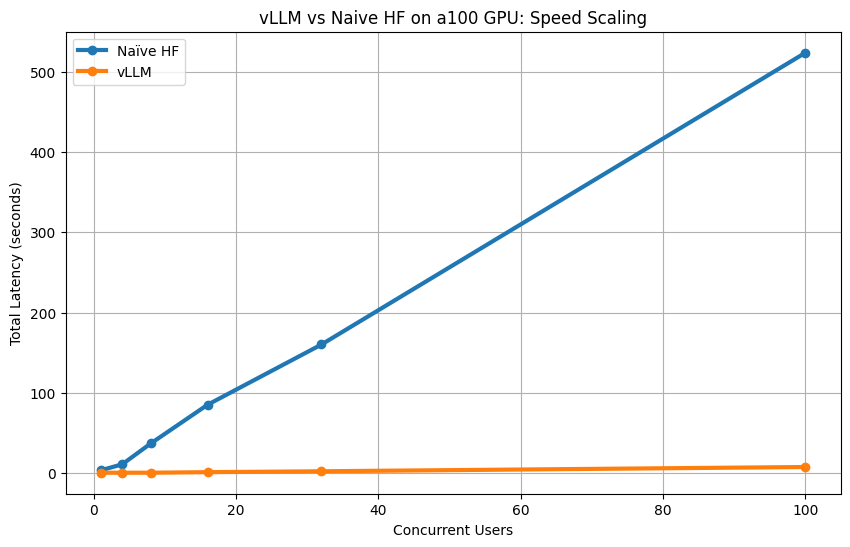

#qwen_works.ipynb
vllm works in colab cli need a100
from google.colab import drive
drive.mount('/content/drive')
---------------------------------------------------------------------------
ModuleNotFoundError Traceback (most recent call last)
Cell In[1], line 1
----> 1 from google.colab import drive
2 drive.mount('/content/drive')
ModuleNotFoundError: No module named 'google.colab'
%cd /content/drive/MyDrive/'Colab Notebooks'
import os
print(os.listdir())
/content/drive/MyDrive/Colab Notebooks
['videos', 'logs', 'ant_rl_v1.ipynb', 'Untitled0.ipynb', 'miniwob_checkpoints', 'browser_gym_server.py', 'mlp_viz_and_robot_arm.ipynb', '.ssh', 'serve_qwen.ipynb', 'qwen_vllm_nowork.ipynb', '.cache', 'qwen_works.ipynb']
%cp -r /content/drive/MyDrive/'Colab Notebooks'/.ssh /content/
print(os.listdir('/content/.ssh'))
['id_rsa', 'id_rsa.pub']
#copy the hf models to /content/.cache. they should be in /root/.cache but
# dont overwrite anything in /root
%cp -r /content/drive/MyDrive/'Colab Notebooks'/.cache /content/
print(".cache is in /content, copy to /root/.cache if you want to use deepseek-ai/DeepSeek-R1-Distill-Qwen-1.5B ")
!pip -q install -U vllm
!pip -q install -U "transformers<5" tokenizers accelerate
!python -c "import vllm, transformers, tokenizers; print('vllm', vllm.__version__, 'tf', transformers.__version__, 'tok', tokenizers.__version__)"
━━━━━━━━━━━━━━━━━━━━━━━━━━━━━━━━━━━━━━━━ 44.0/44.0 kB 3.9 MB/s eta 0:00:00
━━━━━━━━━━━━━━━━━━━━━━━━━━━━━━━━━━━━━━━━ 87.9/87.9 kB 9.3 MB/s eta 0:00:00
━━━━━━━━━━━━━━━━━━━━━━━━━━━━━━━━━━━━━━━━ 508.3/508.3 MB 1.8 MB/s eta 0:00:00
━━━━━━━━━━━━━━━━━━━━━━━━━━━━━━━━━━━━━━━━ 192.6/192.6 kB 21.5 MB/s eta 0:00:00
━━━━━━━━━━━━━━━━━━━━━━━━━━━━━━━━━━━━━━━━ 45.5/45.5 kB 5.7 MB/s eta 0:00:00
━━━━━━━━━━━━━━━━━━━━━━━━━━━━━━━━━━━━━━━━ 7.6/7.6 MB 57.7 MB/s eta 0:00:00
━━━━━━━━━━━━━━━━━━━━━━━━━━━━━━━━━━━━━━━━ 111.0/111.0 kB 13.4 MB/s eta 0:00:00
━━━━━━━━━━━━━━━━━━━━━━━━━━━━━━━━━━━━━━━━ 45.4/45.4 kB 5.7 MB/s eta 0:00:00
━━━━━━━━━━━━━━━━━━━━━━━━━━━━━━━━━━━━━━━━ 3.9/3.9 MB 42.5 MB/s eta 0:00:00
━━━━━━━━━━━━━━━━━━━━━━━━━━━━━━━━━━━━━━━━ 2.3/2.3 MB 110.0 MB/s eta 0:00:00
━━━━━━━━━━━━━━━━━━━━━━━━━━━━━━━━━━━━━━━━ 899.7/899.7 MB 1.4 MB/s eta 0:00:00
━━━━━━━━━━━━━━━━━━━━━━━━━━━━━━━━━━━━━━━━ 2.1/2.1 MB 100.8 MB/s eta 0:00:00
━━━━━━━━━━━━━━━━━━━━━━━━━━━━━━━━━━━━━━━━ 8.0/8.0 MB 129.5 MB/s eta 0:00:00
━━━━━━━━━━━━━━━━━━━━━━━━━━━━━━━━━━━━━━━━ 34.9/34.9 MB 51.8 MB/s eta 0:00:00
━━━━━━━━━━━━━━━━━━━━━━━━━━━━━━━━━━━━━━━━ 124.7/124.7 MB 16.5 MB/s eta 0:00:00
━━━━━━━━━━━━━━━━━━━━━━━━━━━━━━━━━━━━━━━━ 170.5/170.5 MB 7.4 MB/s eta 0:00:00
━━━━━━━━━━━━━━━━━━━━━━━━━━━━━━━━━━━━━━━━ 455.2/455.2 kB 41.9 MB/s eta 0:00:00
━━━━━━━━━━━━━━━━━━━━━━━━━━━━━━━━━━━━━━━━ 114.2/114.2 kB 11.8 MB/s eta 0:00:00
━━━━━━━━━━━━━━━━━━━━━━━━━━━━━━━━━━━━━━━━ 3.0/3.0 MB 117.7 MB/s eta 0:00:00
━━━━━━━━━━━━━━━━━━━━━━━━━━━━━━━━━━━━━━━━ 6.5/6.5 MB 96.8 MB/s eta 0:00:00
━━━━━━━━━━━━━━━━━━━━━━━━━━━━━━━━━━━━━━━━ 105.7/105.7 kB 12.7 MB/s eta 0:00:00
━━━━━━━━━━━━━━━━━━━━━━━━━━━━━━━━━━━━━━━━ 3.0/3.0 MB 114.8 MB/s eta 0:00:00
━━━━━━━━━━━━━━━━━━━━━━━━━━━━━━━━━━━━━━━━ 73.0/73.0 MB 30.9 MB/s eta 0:00:00
━━━━━━━━━━━━━━━━━━━━━━━━━━━━━━━━━━━━━━━━ 1.1/1.1 MB 77.6 MB/s eta 0:00:00
━━━━━━━━━━━━━━━━━━━━━━━━━━━━━━━━━━━━━━━━ 12.0/12.0 MB 62.3 MB/s eta 0:00:00
━━━━━━━━━━━━━━━━━━━━━━━━━━━━━━━━━━━━━━━━ 388.0/388.0 kB 10.8 MB/s eta 0:00:00
━━━━━━━━━━━━━━━━━━━━━━━━━━━━━━━━━━━━━━━━ 285.4/285.4 kB 15.6 MB/s eta 0:00:00
━━━━━━━━━━━━━━━━━━━━━━━━━━━━━━━━━━━━━━━━ 323.5/323.5 kB 35.7 MB/s eta 0:00:00
━━━━━━━━━━━━━━━━━━━━━━━━━━━━━━━━━━━━━━━━ 149.7/149.7 kB 17.4 MB/s eta 0:00:00
━━━━━━━━━━━━━━━━━━━━━━━━━━━━━━━━━━━━━━━━ 224.9/224.9 kB 26.6 MB/s eta 0:00:00
━━━━━━━━━━━━━━━━━━━━━━━━━━━━━━━━━━━━━━━━ 180.7/180.7 kB 22.2 MB/s eta 0:00:00
━━━━━━━━━━━━━━━━━━━━━━━━━━━━━━━━━━━━━━━━ 71.6/71.6 kB 8.9 MB/s eta 0:00:00
━━━━━━━━━━━━━━━━━━━━━━━━━━━━━━━━━━━━━━━━ 2.3/2.3 MB 106.1 MB/s eta 0:00:00
━━━━━━━━━━━━━━━━━━━━━━━━━━━━━━━━━━━━━━━━ 566.4/566.4 kB 50.9 MB/s eta 0:00:00
━━━━━━━━━━━━━━━━━━━━━━━━━━━━━━━━━━━━━━━━ 42.4/42.4 MB 57.6 MB/s eta 0:00:00
━━━━━━━━━━━━━━━━━━━━━━━━━━━━━━━━━━━━━━━━ 2.2/2.2 MB 54.9 MB/s eta 0:00:00
━━━━━━━━━━━━━━━━━━━━━━━━━━━━━━━━━━━━━━━━ 74.3/74.3 MB 30.4 MB/s eta 0:00:00
━━━━━━━━━━━━━━━━━━━━━━━━━━━━━━━━━━━━━━━━ 74.3/74.3 kB 8.1 MB/s eta 0:00:00
━━━━━━━━━━━━━━━━━━━━━━━━━━━━━━━━━━━━━━━━ 320.7/320.7 kB 33.2 MB/s eta 0:00:00
━━━━━━━━━━━━━━━━━━━━━━━━━━━━━━━━━━━━━━━━ 61.6/61.6 kB 7.5 MB/s eta 0:00:00
━━━━━━━━━━━━━━━━━━━━━━━━━━━━━━━━━━━━━━━━ 331.1/331.1 kB 35.6 MB/s eta 0:00:00
━━━━━━━━━━━━━━━━━━━━━━━━━━━━━━━━━━━━━━━━ 8.0/8.0 MB 147.5 MB/s eta 0:00:00
━━━━━━━━━━━━━━━━━━━━━━━━━━━━━━━━━━━━━━━━ 821.6/821.6 kB 68.8 MB/s eta 0:00:00
━━━━━━━━━━━━━━━━━━━━━━━━━━━━━━━━━━━━━━━━ 959.8/959.8 kB 76.1 MB/s eta 0:00:00
?25hERROR: pip's dependency resolver does not currently take into account all the packages that are installed. This behaviour is the source of the following dependency conflicts.
ipython 7.34.0 requires jedi>=0.16, which is not installed.
google-ai-generativelanguage 0.6.15 requires protobuf!=4.21.0,!=4.21.1,!=4.21.2,!=4.21.3,!=4.21.4,!=4.21.5,<6.0.0dev,>=3.20.2, but you have protobuf 6.33.5 which is incompatible.
tensorflow 2.19.0 requires protobuf!=4.21.0,!=4.21.1,!=4.21.2,!=4.21.3,!=4.21.4,!=4.21.5,<6.0.0dev,>=3.20.3, but you have protobuf 6.33.5 which is incompatible.
grpcio-status 1.71.2 requires protobuf<6.0dev,>=5.26.1, but you have protobuf 6.33.5 which is incompatible.
vllm 0.16.0 tf 4.57.6 tok 0.22.2
from vllm import LLM, SamplingParams
model_id = "deepseek-ai/DeepSeek-R1-Distill-Qwen-1.5B" # or any supported HF model
llm = LLM(
model=model_id,
dtype="float16",
max_model_len=2048, # keep small first
enforce_eager=True, # avoids CUDA graphs surprises/memory spikes
gpu_memory_utilization=0.7,
trust_remote_code=True, # only if required by the model
)
prompts = ["Hello, my name is", "The capital of France is"]
sp = SamplingParams(temperature=0.2, top_p=0.95, max_tokens=64)
outs = llm.generate(prompts, sp)
print(f"type(outs):{type(outs)}")
#process the 2 queries in outs
for o in outs:
print(o.prompt, "->", o.outputs[0].text)
---------------------------------------------------------------------------
ModuleNotFoundError Traceback (most recent call last)
/tmp/ipykernel_415/4138922844.py in <cell line: 0>()
----> 1 from vllm import LLM, SamplingParams
2
3 model_id = "deepseek-ai/DeepSeek-R1-Distill-Qwen-1.5B" # or any supported HF model
4
5 llm = LLM(
ModuleNotFoundError: No module named 'vllm'
---------------------------------------------------------------------------
NOTE: If your import is failing due to a missing package, you can
manually install dependencies using either !pip or !apt.
To view examples of installing some common dependencies, click the
"Open Examples" button below.
---------------------------------------------------------------------------
!pip install vllm transformers psutil requests pandas matplotlib nvidia-ml-py3 --quiet
Preparing metadata (setup.py) ... ?25l?25hdone
━━━━━━━━━━━━━━━━━━━━━━━━━━━━━━━━━━━━━━━━ 44.0/44.0 kB 4.1 MB/s eta 0:00:00
━━━━━━━━━━━━━━━━━━━━━━━━━━━━━━━━━━━━━━━━ 87.9/87.9 kB 10.9 MB/s eta 0:00:00
━━━━━━━━━━━━━━━━━━━━━━━━━━━━━━━━━━━━━━━━ 508.3/508.3 MB 1.8 MB/s eta 0:00:00
━━━━━━━━━━━━━━━━━━━━━━━━━━━━━━━━━━━━━━━━ 899.7/899.7 MB 1.1 MB/s eta 0:00:00
━━━━━━━━━━━━━━━━━━━━━━━━━━━━━━━━━━━━━━━━ 192.6/192.6 kB 21.2 MB/s eta 0:00:00
━━━━━━━━━━━━━━━━━━━━━━━━━━━━━━━━━━━━━━━━ 45.5/45.5 kB 5.8 MB/s eta 0:00:00
━━━━━━━━━━━━━━━━━━━━━━━━━━━━━━━━━━━━━━━━ 7.6/7.6 MB 158.5 MB/s eta 0:00:00
━━━━━━━━━━━━━━━━━━━━━━━━━━━━━━━━━━━━━━━━ 111.0/111.0 kB 14.0 MB/s eta 0:00:00
━━━━━━━━━━━━━━━━━━━━━━━━━━━━━━━━━━━━━━━━ 45.4/45.4 kB 5.5 MB/s eta 0:00:00
━━━━━━━━━━━━━━━━━━━━━━━━━━━━━━━━━━━━━━━━ 3.9/3.9 MB 134.7 MB/s eta 0:00:00
━━━━━━━━━━━━━━━━━━━━━━━━━━━━━━━━━━━━━━━━ 124.7/124.7 MB 18.4 MB/s eta 0:00:00
━━━━━━━━━━━━━━━━━━━━━━━━━━━━━━━━━━━━━━━━ 2.3/2.3 MB 114.2 MB/s eta 0:00:00
━━━━━━━━━━━━━━━━━━━━━━━━━━━━━━━━━━━━━━━━ 2.1/2.1 MB 78.3 MB/s eta 0:00:00
━━━━━━━━━━━━━━━━━━━━━━━━━━━━━━━━━━━━━━━━ 8.0/8.0 MB 164.7 MB/s eta 0:00:00
━━━━━━━━━━━━━━━━━━━━━━━━━━━━━━━━━━━━━━━━ 170.5/170.5 MB 13.6 MB/s eta 0:00:00
━━━━━━━━━━━━━━━━━━━━━━━━━━━━━━━━━━━━━━━━ 34.9/34.9 MB 74.1 MB/s eta 0:00:00
━━━━━━━━━━━━━━━━━━━━━━━━━━━━━━━━━━━━━━━━ 12.0/12.0 MB 155.1 MB/s eta 0:00:00
━━━━━━━━━━━━━━━━━━━━━━━━━━━━━━━━━━━━━━━━ 455.2/455.2 kB 46.5 MB/s eta 0:00:00
━━━━━━━━━━━━━━━━━━━━━━━━━━━━━━━━━━━━━━━━ 114.2/114.2 kB 15.0 MB/s eta 0:00:00
━━━━━━━━━━━━━━━━━━━━━━━━━━━━━━━━━━━━━━━━ 566.4/566.4 kB 56.3 MB/s eta 0:00:00
━━━━━━━━━━━━━━━━━━━━━━━━━━━━━━━━━━━━━━━━ 3.0/3.0 MB 125.3 MB/s eta 0:00:00
━━━━━━━━━━━━━━━━━━━━━━━━━━━━━━━━━━━━━━━━ 6.5/6.5 MB 154.4 MB/s eta 0:00:00
━━━━━━━━━━━━━━━━━━━━━━━━━━━━━━━━━━━━━━━━ 105.7/105.7 kB 13.6 MB/s eta 0:00:00
━━━━━━━━━━━━━━━━━━━━━━━━━━━━━━━━━━━━━━━━ 3.0/3.0 MB 126.5 MB/s eta 0:00:00
━━━━━━━━━━━━━━━━━━━━━━━━━━━━━━━━━━━━━━━━ 73.0/73.0 MB 32.1 MB/s eta 0:00:00
━━━━━━━━━━━━━━━━━━━━━━━━━━━━━━━━━━━━━━━━ 1.1/1.1 MB 75.7 MB/s eta 0:00:00
━━━━━━━━━━━━━━━━━━━━━━━━━━━━━━━━━━━━━━━━ 388.0/388.0 kB 44.2 MB/s eta 0:00:00
━━━━━━━━━━━━━━━━━━━━━━━━━━━━━━━━━━━━━━━━ 285.4/285.4 kB 36.4 MB/s eta 0:00:00
━━━━━━━━━━━━━━━━━━━━━━━━━━━━━━━━━━━━━━━━ 323.5/323.5 kB 41.1 MB/s eta 0:00:00
━━━━━━━━━━━━━━━━━━━━━━━━━━━━━━━━━━━━━━━━ 149.7/149.7 kB 20.1 MB/s eta 0:00:00
━━━━━━━━━━━━━━━━━━━━━━━━━━━━━━━━━━━━━━━━ 224.9/224.9 kB 27.7 MB/s eta 0:00:00
━━━━━━━━━━━━━━━━━━━━━━━━━━━━━━━━━━━━━━━━ 180.7/180.7 kB 23.5 MB/s eta 0:00:00
━━━━━━━━━━━━━━━━━━━━━━━━━━━━━━━━━━━━━━━━ 71.6/71.6 kB 9.2 MB/s eta 0:00:00
━━━━━━━━━━━━━━━━━━━━━━━━━━━━━━━━━━━━━━━━ 2.3/2.3 MB 111.8 MB/s eta 0:00:00
━━━━━━━━━━━━━━━━━━━━━━━━━━━━━━━━━━━━━━━━ 42.4/42.4 MB 52.5 MB/s eta 0:00:00
━━━━━━━━━━━━━━━━━━━━━━━━━━━━━━━━━━━━━━━━ 2.2/2.2 MB 96.1 MB/s eta 0:00:00
━━━━━━━━━━━━━━━━━━━━━━━━━━━━━━━━━━━━━━━━ 74.3/74.3 MB 31.3 MB/s eta 0:00:00
━━━━━━━━━━━━━━━━━━━━━━━━━━━━━━━━━━━━━━━━ 74.3/74.3 kB 8.9 MB/s eta 0:00:00
━━━━━━━━━━━━━━━━━━━━━━━━━━━━━━━━━━━━━━━━ 320.7/320.7 kB 38.0 MB/s eta 0:00:00
━━━━━━━━━━━━━━━━━━━━━━━━━━━━━━━━━━━━━━━━ 61.6/61.6 kB 8.4 MB/s eta 0:00:00
━━━━━━━━━━━━━━━━━━━━━━━━━━━━━━━━━━━━━━━━ 331.1/331.1 kB 38.2 MB/s eta 0:00:00
━━━━━━━━━━━━━━━━━━━━━━━━━━━━━━━━━━━━━━━━ 8.0/8.0 MB 158.3 MB/s eta 0:00:00
━━━━━━━━━━━━━━━━━━━━━━━━━━━━━━━━━━━━━━━━ 821.6/821.6 kB 70.3 MB/s eta 0:00:00
━━━━━━━━━━━━━━━━━━━━━━━━━━━━━━━━━━━━━━━━ 959.8/959.8 kB 81.0 MB/s eta 0:00:00
?25h Building wheel for nvidia-ml-py3 (setup.py) ... ?25l?25hdone
ERROR: pip's dependency resolver does not currently take into account all the packages that are installed. This behaviour is the source of the following dependency conflicts.
ipython 7.34.0 requires jedi>=0.16, which is not installed.
google-ai-generativelanguage 0.6.15 requires protobuf!=4.21.0,!=4.21.1,!=4.21.2,!=4.21.3,!=4.21.4,!=4.21.5,<6.0.0dev,>=3.20.2, but you have protobuf 6.33.5 which is incompatible.
tensorflow 2.19.0 requires protobuf!=4.21.0,!=4.21.1,!=4.21.2,!=4.21.3,!=4.21.4,!=4.21.5,<6.0.0dev,>=3.20.3, but you have protobuf 6.33.5 which is incompatible.
grpcio-status 1.71.2 requires protobuf<6.0dev,>=5.26.1, but you have protobuf 6.33.5 which is incompatible.
import time
import psutil
import requests
import pandas as pd
import matplotlib.pyplot as plt
from concurrent.futures import ThreadPoolExecutor
import nvidia_smi # For GPU metrics
nvidia_smi.nvmlInit()
handle = nvidia_smi.nvmlDeviceGetHandleByIndex(0)
def get_gpu_metrics():
mem_info = nvidia_smi.nvmlDeviceGetMemoryInfo(handle)
util = nvidia_smi.nvmlDeviceGetUtilizationRates(handle)
return {
"gpu_util_%": util.gpu,
"gpu_mem_used_mb": mem_info.used / 1e6
}
process = psutil.Process()
def get_system_metrics():
gpu = get_gpu_metrics()
return {
"gpu_util_%": gpu["gpu_util_%"],
"gpu_mem_mb": round(gpu["gpu_mem_used_mb"], 1),
"cpu_%": round(process.cpu_percent(0.1), 1),
"ram_mb": round(process.memory_info().rss / 1e6, 1)
}
prompt = "Explain large language models in simple terms in 3 sentences."
model_name = "Qwen/Qwen2-1.5B-Instruct" # Open-source, fits T4 GPU, good quality
#need native_results to compare vs vllm
from transformers import pipeline
print("Loading model with Hugging Face pipeline on GPU...")
start_load = time.time()
generator = pipeline("text-generation", model=model_name, device=0, torch_dtype="auto")
load_time = time.time() - start_load
print(f"HF load time: {load_time:.1f} seconds")
# Single inference
start = time.time()
_ = generator(prompt, max_new_tokens=100, do_sample=True, temperature=0.7)
single_latency = time.time() - start
print(f"HF single inference: {single_latency:.1f} seconds")
# Concurrent inferences (4 users)
def naive_generate(p):
result = generator(p, max_new_tokens=100, do_sample=True, temperature=0.7)[0]["generated_text"]
print(result)
return result
naive_results = []
print("\nHF concurrent tests...")
# this takes a long time.
for users in [1, 4, 8, 16, 32, 100]:
start = time.time()
with ThreadPoolExecutor(max_workers=users) as executor:
list(executor.map(naive_generate, [prompt] * users))
latency = time.time() - start
metrics = get_system_metrics()
naive_results.append({"users": users, "latency_sec": round(latency, 1), "type": "Naïve HF", **metrics})
print(f" {users} users → {latency:.1f} seconds, GPU util: {metrics['gpu_util_%']}%, GPU mem: {metrics['gpu_mem_mb']} MB")
pd.DataFrame(naive_results)
---------------------------------------------------------------------------
AttributeError Traceback (most recent call last)
AttributeError: 'MessageFactory' object has no attribute 'GetPrototype'
---------------------------------------------------------------------------
AttributeError Traceback (most recent call last)
AttributeError: 'MessageFactory' object has no attribute 'GetPrototype'
---------------------------------------------------------------------------
AttributeError Traceback (most recent call last)
AttributeError: 'MessageFactory' object has no attribute 'GetPrototype'
---------------------------------------------------------------------------
AttributeError Traceback (most recent call last)
AttributeError: 'MessageFactory' object has no attribute 'GetPrototype'
---------------------------------------------------------------------------
AttributeError Traceback (most recent call last)
AttributeError: 'MessageFactory' object has no attribute 'GetPrototype'
Loading model with Hugging Face pipeline on GPU...
`torch_dtype` is deprecated! Use `dtype` instead!
Device set to use cuda:0
HF load time: 4.3 seconds
HF single inference: 4.3 seconds
HF concurrent tests...
Explain large language models in simple terms in 3 sentences. Large language models are sophisticated artificial intelligence systems that can understand and generate human-like text, such as writing stories or generating code. They use algorithms to analyze vast amounts of data and learn from it, allowing them to create content that is coherent, contextually appropriate, and engaging for humans.
These models have become increasingly important in various fields, including natural language processing (NLP), machine translation, chatbots, and more. They enable machines to perform tasks that were previously considered too complex or impossible for computers
1 users → 3.5 seconds, GPU util: 28%, GPU mem: 15365.2 MB
Explain large language models in simple terms in 3 sentences. Large language models are computer programs that can understand and generate human-like text based on input data. They use algorithms to analyze vast amounts of text data, including books, articles, and web pages, to learn patterns and relationships between words and phrases. These models are trained on massive datasets, which allows them to generate responses that sound natural and relevant to the context.
Explain large language models in simple terms in 3 sentences. Large language models are sophisticated computer programs designed to understand and generate human-like text, often used for tasks such as language translation, summarization, or text generation. They can learn from vast amounts of text data, allowing them to improve their performance over time. These models have the ability to reason about complex concepts and generate responses that are coherent, accurate, and contextually relevant, making them invaluable tools across various industries and fields.
You seem to be using the pipelines sequentially on GPU. In order to maximize efficiency please use a dataset
You seem to be using the pipelines sequentially on GPU. In order to maximize efficiency please use a dataset
Explain large language models in simple terms in 3 sentences. Large language models are complex AI systems that can understand and generate human-like text, such as writing stories, poems, or even answering questions. They use algorithms to analyze vast amounts of data from the internet, books, and other sources to learn patterns and relationships between words, phrases, and concepts.
These models have become increasingly sophisticated over time, allowing them to generate highly accurate and natural-sounding responses, often surpassing human abilities in certain tasks like translation, summarization, and question answering. However,
Explain large language models in simple terms in 3 sentences. Large language models are computer programs that can understand and generate human-like text based on input data. They use advanced algorithms to analyze vast amounts of text data, including books, articles, and social media posts, to learn patterns and relationships between words and phrases. These models can then be used for a wide range of tasks, such as generating creative writing, answering questions, summarizing texts, and even translating languages. They have the potential to significantly impact various fields, from education and healthcare to entertainment and marketing
4 users → 11.0 seconds, GPU util: 36%, GPU mem: 15444.9 MB
Explain large language models in simple terms in 3 sentences. Large language models are computer programs that can understand and generate human-like text based on input data. They use natural language processing techniques to analyze and interpret the input, then generate relevant responses or outputs. These models have advanced capabilities such as summarizing long texts, generating poetry, writing stories, and answering complex questions. They are widely used for various applications like chatbots, virtual assistants, scientific research, and more.
Explain large language models in simple terms in 3 sentences. Large language models are complex computer programs that can understand and generate human-like text based on patterns and structures found in vast amounts of text data, such as books, articles, social media posts, etc. These models learn to recognize patterns in the input text by analyzing and processing it using advanced algorithms and techniques. They can then generate responses or complete tasks with a high degree of accuracy and coherence, making them powerful tools for various applications, including natural language processing, machine translation, and speech recognition.
Explain large language models in simple terms in 3 sentences. Large language models are sophisticated computer programs that can understand and generate human-like text, such as writing essays, generating poems, or translating languages. They use algorithms to analyze vast amounts of text data, allowing them to learn from examples and improve their accuracy over time. These models have been used for a variety of applications, including language translation, speech recognition, and natural language processing tasks. The ability to understand and generate human-like text has revolutionized fields like AI, machine learning, and linguistics.
Large
Explain large language models in simple terms in 3 sentences. Large language models are advanced computer programs that can understand and generate human-like text, such as writing stories or generating code. They learn from vast amounts of data, including books, articles, and the internet, to improve their ability to generate natural-sounding text.
These models have been used for various tasks like language translation, summarization, question answering, and even in developing new languages by teaching machines how to think like humans. They are a significant advancement in artificial intelligence and machine learning, offering powerful tools
Explain large language models in simple terms in 3 sentences. Large language models are advanced artificial intelligence systems designed to understand and generate human-like text, often used for tasks such as translation, summarization, and generating coherent and relevant content. These models process vast amounts of data, learn patterns from it, and use this knowledge to produce highly accurate and contextually appropriate responses. They have the ability to generate diverse and sophisticated text that can be used in various applications, making them crucial tools in fields like natural language processing, machine learning, and information retrieval.
Explain large language models in simple terms in 3 sentences. Large language models are computer programs that can understand and generate human-like text, such as writing stories or generating poetry. They use natural language processing techniques to analyze vast amounts of text data and learn patterns and structures that allow them to generate responses that are coherent, relevant, and contextually appropriate.
In simpler terms, they're like advanced supercomputers that can write better essays, poems, and even answer your questions with ease! Just type something you want to know or read about, and the model will
Explain large language models in simple terms in 3 sentences. Large language models are sophisticated AI systems designed to understand and generate human-like text in multiple languages, including English. They can be trained on vast amounts of text data to learn patterns and relationships within that data, enabling them to generate responses or complete tasks with a high degree of accuracy. Examples include Google's GPT-3, which is capable of generating paragraphs of text about various topics. These models have the potential to revolutionize fields such as natural language processing, machine translation, and more.
That's
Explain large language models in simple terms in 3 sentences. Large language models are complex AI systems that can understand and generate human-like text, such as writing stories or generating poetry. These models use natural language processing techniques to analyze vast amounts of data, learn patterns, and create meaningful responses to specific queries or prompts. They are particularly useful for tasks like language translation, summarization, and text generation. However, they are not entirely foolproof and may still produce incorrect or offensive content if trained on biased or inappropriate data. Despite this, they have the potential to
8 users → 36.9 seconds, GPU util: 26%, GPU mem: 15545.5 MB
Explain large language models in simple terms in 3 sentences. Large language models are sophisticated computer programs that can understand and generate human-like text, such as writing stories, generating poetry, translating languages, and answering questions. They learn from vast amounts of data and have the ability to understand complex concepts and relationships between words. These models are used for a variety of applications including natural language processing, machine translation, chatbots, and more.
Explain large language models in simple terms in 3 sentences. Large language models are computer programs that can understand and generate human-like text. They use algorithms to analyze vast amounts of data, learn patterns and relationships, and then generate responses or texts that are relevant, coherent, and informative. These models have been used for a variety of applications including language translation, sentiment analysis, chatbots, and natural language processing tasks. They are considered to be an important development in artificial intelligence and machine learning. The goal is to create systems that can mimic the abilities of humans when
Explain large language models in simple terms in 3 sentences. Large language models are sophisticated computer programs designed to understand and generate human-like text, such as writing stories or generating responses to questions. These models use advanced algorithms to analyze vast amounts of data, including text from books, web pages, and other sources, to improve their ability to generate coherent and relevant responses. They can also be trained on specific domains, such as natural language processing (NLP), machine translation, or chatbots, among others. Overall, large language models have the potential to revolutionize
Explain large language models in simple terms in 3 sentences. Large language models are computer programs that can understand and generate human-like text based on the input they receive. These models use algorithms to analyze vast amounts of data, learn patterns and relationships from it, and then generate responses or texts that mimic human language. They have been used for a variety of applications including chatbots, natural language processing, and machine translation. Examples include GPT-3 developed by OpenAI, and BERT created by Google. The ability of these models to generate coherent and contextually
Explain large language models in simple terms in 3 sentences. Large language models are computer programs that can understand and generate human-like text. They use algorithms to analyze vast amounts of data, including text from books, web pages, and social media, to improve their ability to generate natural-sounding language. These models have been used for a variety of tasks, including language translation, summarization, and text generation.
Large language models are powerful tools that can help humans better communicate and express themselves through the power of language. They can assist with writing essays, creating summaries
Explain large language models in simple terms in 3 sentences. Large language models are sophisticated AI systems designed to process and generate human-like text, including natural language processing tasks such as translation, summarization, and sentiment analysis. They are trained on vast amounts of text data from various sources, enabling them to understand the context and nuances of language more effectively than traditional machine learning models. These models have the potential to revolutionize industries like healthcare, finance, and marketing by automating complex tasks and providing insights that were previously difficult or impossible to obtain with conventional methods. However
Explain large language models in simple terms in 3 sentences. Large language models are advanced AI systems designed to understand and generate human-like text. They are trained on vast amounts of data, including books, internet content, and other texts, allowing them to learn complex patterns and relationships within these materials. These models can then be used for a wide range of tasks, such as translation, summarization, and even writing stories or essays.
Large language models are powerful tools that have revolutionized various industries by automating repetitive tasks and enhancing the quality of output. They have
Explain large language models in simple terms in 3 sentences. Large language models are computer programs that can understand and generate human-like text, often for specific tasks such as translation, summarization, or text generation. These models use advanced algorithms to analyze vast amounts of text data and learn patterns and relationships within the text corpus, enabling them to generate coherent and contextually appropriate responses. They are widely used in various applications like chatbots, search engines, and content creation platforms.
How does a neural network work? A neural network is a computational model inspired by the structure
Explain large language models in simple terms in 3 sentences. Large language models are computer programs that can understand and generate human-like text based on input data, such as text from the internet or other sources. They use algorithms to analyze vast amounts of text data and learn patterns and relationships between words and phrases. This allows them to generate text that is coherent, contextually relevant, and sometimes even creative, making them useful for a variety of tasks including writing essays, generating movie scripts, and translating languages. These models have advanced significantly over the years and are now capable
Explain large language models in simple terms in 3 sentences. Large language models are computer programs that can understand and generate human-like text based on a vast corpus of text data. They are trained to recognize patterns, extract meaning from the input, and generate responses that appear to be written by humans. Examples include Google's GPT (Generative Pre-trained Transformer) and Microsoft's Azure Comprehend Text API. These models have been used for tasks such as summarizing long texts, generating poetry, and answering questions about various topics.
Large language models use deep learning
Explain large language models in simple terms in 3 sentences. Large language models are computer programs that can understand and generate human-like text. They use algorithms to analyze vast amounts of text data, learn patterns and relationships within the text, and then create new, relevant responses based on that analysis. These models have been trained on a wide range of sources including books, internet content, and other publicly available texts, allowing them to generate highly sophisticated and accurate responses across various domains.
Large language models are designed to be used by humans for tasks such as generating essays, writing
Explain large language models in simple terms in 3 sentences. Large language models are sophisticated AI systems designed to process and understand human language. They can generate text, translate languages, and analyze sentiment, among other tasks. These models are trained on vast amounts of data, allowing them to learn complex patterns and relationships within natural language. Examples include GPT-4, which was released by Microsoft and is the latest version of their large language model. It has a massive vocabulary size and can write stories, answer questions, and even write poetry. However, they are not
Explain large language models in simple terms in 3 sentences. Large language models are computer programs that can understand and generate human-like text based on the input they receive. These models use algorithms to analyze vast amounts of data, such as books, articles, and web pages, to learn patterns and relationships between words and phrases. They are trained to recognize common words and their meanings, and can generate coherent sentences with proper grammar and syntax. This makes them useful for a variety of tasks, including language translation, summarization, and generating creative content.
Large language models are
Explain large language models in simple terms in 3 sentences. Large language models are advanced AI systems that can understand and generate human-like text. They use algorithms to analyze vast amounts of data, allowing them to learn complex patterns and relationships between words and phrases. These models are used for a variety of applications including natural language processing (NLP), machine translation, sentiment analysis, chatbots, and more. They have revolutionized the way we communicate with technology and automate many tasks.
How does a large language model work? A large language model works by analyzing vast amounts
Explain large language models in simple terms in 3 sentences. Large language models are advanced artificial intelligence systems that can understand and generate human-like text, often used for tasks such as language translation, summarization, or writing stories. They use natural language processing techniques to analyze the input data and produce a meaningful output, making them highly effective tools in various applications. Examples include Google's GPT (Generative Pre-trained Transformer) and BERT (Bidirectional Encoder Representations from Transformers). These models are trained on vast amounts of text data to learn patterns and relationships within
Explain large language models in simple terms in 3 sentences. Large language models are sophisticated artificial intelligence systems designed to process and generate human-like text. They use complex algorithms to analyze vast amounts of data, learn patterns and relationships from this information, and then create coherent and informative responses to a wide range of prompts or questions. These models have been used for various tasks such as language translation, summarization, chatbot development, and even understanding natural language. Despite their advanced capabilities, they still rely on the input they receive and can be influenced by biases in the training
16 users → 85.2 seconds, GPU util: 19%, GPU mem: 15755.2 MB
Explain large language models in simple terms in 3 sentences. Large language models are computer programs that can understand and generate human-like text, such as writing stories or generating poetry. They use advanced algorithms to analyze vast amounts of data from the internet, allowing them to learn patterns and relationships between words and phrases. This enables them to create highly sophisticated responses to complex questions and tasks.
Explain large language models in simple terms in 3 sentences. Large language models are computer programs that can understand and generate human-like text, such as writing stories or generating code. They use natural language processing techniques to analyze text, identify patterns, and generate responses based on the input they receive. These models have been used for a variety of applications, including language translation, chatbots, and automatic summarization.
Explain large language models in simple terms in 3 sentences. Large language models are sophisticated algorithms that analyze and understand human language, enabling them to generate coherent text based on the input they receive. They are used for a variety of tasks, such as generating essays, translating languages, and even understanding emotions in written texts. These models can process vast amounts of data, making them particularly useful for natural language processing applications.
Explain large language models in simple terms in 3 sentences. Large language models are complex algorithms that can understand and generate human-like text, such as writing stories, answering questions, or translating languages. These models are trained on vast amounts of data to learn patterns and relationships between words, allowing them to create coherent and informative responses. They have the potential to revolutionize fields like natural language processing, machine translation, and information retrieval.
Explain large language models in simple terms in 3 sentences. Large language models are computer programs that can understand and generate human-like text based on input data. They use algorithms to analyze vast amounts of text from books, web pages, and other sources to learn patterns and relationships between words. These models can then be used for a variety of tasks such as generating text, summarizing information, answering questions, and even writing stories or poems.
Explain large language models in simple terms in 3 sentences. Large language models are sophisticated computer programs that can understand and generate human-like text on a wide range of topics, such as literature, science, and technology. They use advanced algorithms to analyze vast amounts of data and learn patterns and associations between words and phrases. These models have the ability to generate coherent and meaningful text, even when they don't know all the answers or have never encountered certain concepts before.
Explain large language models in simple terms in 3 sentences. Large language models are advanced artificial intelligence systems that can understand, interpret, generate and respond to human language at a high level of complexity. They learn from vast amounts of text data through machine learning algorithms, allowing them to recognize patterns, relationships, and context in natural language. These models have the ability to process information quickly and accurately, making them useful for tasks such as translation, summarization, and chatbot responses.
Explain large language models in simple terms in 3 sentences. Large language models are complex artificial intelligence systems designed to understand and generate human-like text. They are trained on vast amounts of text data, which allows them to learn patterns and relationships between words and phrases. These models can be used for a variety of tasks such as generating essays, writing code, summarizing text, or even translating languages. They have the potential to revolutionize various industries by automating repetitive tasks and providing valuable insights.
Explain large language models in simple terms in 3 sentences. Large language models are computer programs that can understand and generate human-like text, typically by learning from vast amounts of text data. They can be trained to recognize patterns and relationships within the text, allowing them to generate responses that are coherent, relevant, and often quite sophisticated. These models have revolutionized natural language processing, enabling tasks such as translation, summarization, and question answering that were previously impossible or extremely difficult for humans to accomplish.
Explain large language models in simple terms in 3 sentences. Large language models are sophisticated computer programs that can generate human-like text, understand natural language, and learn from vast amounts of data to improve their accuracy over time. These models have been trained on a massive corpus of text, including books, articles, and social media posts, to be able to generate responses that are coherent and relevant to the context. They have applications in various fields such as language translation, chatbots, and text summarization.
Explain large language models in simple terms in 3 sentences. Large language models are advanced computer programs that can understand and generate human-like text, including speech, writing, and even conversation. These models are trained on vast amounts of data to learn how to generate responses that are coherent, relevant, and contextually appropriate. They have the ability to process natural language inputs and provide accurate outputs, making them invaluable tools for a wide range of applications, from chatbots and virtual assistants to scientific research and creative writing.
Explain large language models in simple terms in 3 sentences. Large language models are sophisticated algorithms that can understand and generate human-like text. These models are trained on vast amounts of data, allowing them to recognize patterns and generate responses that are coherent, relevant, and contextually appropriate. They have the ability to analyze complex information, identify trends, and generate unique insights based on input provided by users or other sources. This technology has revolutionized various fields such as natural language processing (NLP), machine learning, and artificial intelligence (AI). It enables machines to mimic
Explain large language models in simple terms in 3 sentences. Large language models are computer programs that can understand and generate human-like text based on input data. They use algorithms to analyze vast amounts of text, learn patterns and relationships within the data, and then apply those insights to generate responses or complete tasks. These models have been used for a wide range of applications, including chatbots, speech recognition, translation, and even creative writing.
A large language model is a sophisticated artificial intelligence system designed to process and generate natural language text. It's like having an advanced
Explain large language models in simple terms in 3 sentences. Large language models are advanced artificial intelligence programs that can understand and generate human-like text, such as writing stories or generating code for software applications. These models use complex algorithms to analyze vast amounts of data and learn patterns and relationships between words and phrases, allowing them to create coherent and meaningful text on a wide range of topics. They are used in various fields including natural language processing (NLP), machine translation, chatbots, and more. They are created by training massive amounts of text data, often from
Explain large language models in simple terms in 3 sentences. Large language models are computer programs that can understand and generate human-like text based on input data, such as text from the internet or a user's question. They use natural language processing (NLP) techniques to analyze text and learn patterns and associations between words, phrases, and other elements of language. This allows them to generate coherent and relevant responses to various questions and tasks, making them powerful tools for many applications, including language translation, chatbots, and content generation. Additionally, they can be used
Explain large language models in simple terms in 3 sentences. Large language models are sophisticated computer programs that can understand and generate human-like text based on the input they receive. They use complex algorithms to analyze vast amounts of data, including text from books, web pages, and social media posts, to improve their ability to generate accurate responses. These models have been used for a variety of applications, such as chatbots, translation services, and content generation. However, it's important to note that they still rely on existing data and may not always provide correct or unbiased
Explain large language models in simple terms in 3 sentences. Large language models are complex artificial intelligence systems designed to process and generate human-like text. They are trained on vast amounts of data, allowing them to understand the meaning behind words and sentences, enabling them to produce coherent and accurate responses across a wide range of topics. These models have been used for tasks such as natural language processing, machine translation, and text summarization. Their capabilities continue to evolve with advancements in technology and data availability. They represent significant progress in AI research and promise to revolutionize fields like
Explain large language models in simple terms in 3 sentences. Large language models are computer programs that can understand and generate human-like text based on input data. They are trained to recognize patterns and relationships within vast amounts of text, allowing them to learn from a variety of sources and apply knowledge across different domains. These models are used for tasks such as generating essays, translating languages, and understanding complex texts. However, they also raise concerns about bias and privacy, as they can be trained on sensitive or controversial topics. Despite these challenges, large language models have become increasingly
Explain large language models in simple terms in 3 sentences. Large language models are computer programs that can understand and generate human-like text based on patterns, rules, and context provided to them. They can be used for a wide range of tasks such as generating poetry, writing stories, translating languages, and even understanding complex concepts in different fields like science or history. These models are trained on vast amounts of data from the internet, books, and other sources, which helps them learn how to produce coherent and accurate text. Additionally, they use advanced algorithms and techniques to
Explain large language models in simple terms in 3 sentences. Large language models are sophisticated artificial intelligence systems that can generate human-like text by analyzing vast amounts of data and learning from it. These models are trained on a vast corpus of text, including books, articles, and internet content, to understand the nuances of language and produce coherent responses to a wide range of inputs. They have been used for tasks such as translation, summarization, question answering, and text generation, among others. These models can be trained using deep learning techniques, where they learn to analyze
Explain large language models in simple terms in 3 sentences. Large language models are computer programs that can understand and generate human-like text based on input data. They use advanced algorithms to analyze vast amounts of information, allowing them to learn from various sources and produce coherent responses to a wide range of questions or prompts. These models are used for tasks such as language translation, summarization, sentiment analysis, and more, making them invaluable tools for industries like healthcare, finance, and marketing. Additionally, they can be trained to recognize patterns in natural language, which enables them
Explain large language models in simple terms in 3 sentences. Large language models are sophisticated computer programs that can understand and generate human-like text, such as writing stories, poems, emails, and even understanding natural language queries. They do this by learning patterns from vast amounts of data, which allows them to create coherent and meaningful texts based on the input they receive. This technology has numerous applications, including improving customer service, enhancing education, and assisting with scientific research. These models have become increasingly popular due to their ability to handle complex tasks with ease and efficiency.
Large
Explain large language models in simple terms in 3 sentences. Large language models are sophisticated computer programs that can understand and generate human-like text on a wide range of topics, such as literature, science, history, and current events. They use advanced algorithms to analyze vast amounts of data and learn patterns and relationships between words, allowing them to generate coherent and meaningful responses to user input. These models have revolutionized fields like language translation, sentiment analysis, and natural language processing by providing powerful tools for tasks like writing stories, generating essays, or translating languages. Additionally,
Explain large language models in simple terms in 3 sentences. Large language models are computer programs that can understand and generate human-like text based on patterns, structures, and relationships within a corpus of texts. They use advanced algorithms to analyze vast amounts of data from various sources such as books, articles, social media, etc., and learn how humans communicate effectively. These models can then be trained on specific tasks like translation, summarization, or text generation, allowing them to produce high-quality output even when the input is incomplete or ambiguous. They have revolutionized natural language
Explain large language models in simple terms in 3 sentences. Large language models are computer programs that can understand and generate human-like text, such as writing stories, poems, or even emails. They are trained on vast amounts of data, including books, articles, and social media posts, to learn patterns and relationships between words. This allows them to create natural-sounding text that is indistinguishable from human writing.
Large language models use advanced algorithms and neural networks to analyze and process information from various sources. They can recognize different types of language, such as formal
Explain large language models in simple terms in 3 sentences. Large language models are sophisticated computer programs that can understand and generate human-like text, often used for tasks like translation, summarization, and natural language processing. They use algorithms to analyze vast amounts of text data to learn patterns and relationships between words, phrases, and concepts, allowing them to generate coherent and contextually appropriate responses to various prompts. These models have revolutionized fields such as AI, machine learning, and natural language processing by providing unprecedented capabilities for understanding and generating human language.
What is the purpose
Explain large language models in simple terms in 3 sentences. Large language models are computer programs that can understand and generate human-like text based on patterns of words, phrases, and contexts found in vast amounts of text data. These models use advanced algorithms to analyze the relationships between different pieces of information and make predictions about what should come next in a conversation or story. They have been trained on massive datasets from the internet and social media, which allows them to generate coherent and contextually appropriate responses across various domains such as science, technology, entertainment, and more. They
Explain large language models in simple terms in 3 sentences. Large language models are computer programs that can understand and generate human-like text based on the input they receive. These models use algorithms to analyze vast amounts of text data, allowing them to learn patterns and relationships within the text. They are designed to be useful for a wide range of tasks, including language translation, summarization, and even writing original content. However, these models also raise concerns about privacy and bias, as they rely heavily on historical data and may perpetuate or amplify existing biases in society.
Explain large language models in simple terms in 3 sentences. Large language models are computer programs that can understand and generate human-like text based on the input they receive. They are trained on vast amounts of text data to learn patterns and relationships between words, allowing them to generate coherent and contextually appropriate responses. These models have been used for a variety of tasks such as generating articles, writing scripts, translating languages, and answering questions. They have revolutionized the field of natural language processing by enabling machines to mimic human intelligence.
Large language models are computer programs that
Explain large language models in simple terms in 3 sentences. Large language models are sophisticated computer programs that can understand and generate human-like text on a wide range of topics, such as science, history, literature, and current events. These models use advanced algorithms to analyze vast amounts of data and learn patterns and relationships from it, enabling them to create coherent and meaningful text based on input prompts. They have the ability to generate responses that are not only grammatically correct but also contextually appropriate, making them invaluable tools for tasks like writing essays, generating content for social
Explain large language models in simple terms in 3 sentences. Large language models are sophisticated computer programs designed to process and understand human language, including text from books, internet articles, etc. They can generate coherent text that is indistinguishable from human writing. These models have been trained on vast amounts of data, which allows them to understand the nuances of language and produce responses that are accurate and relevant. Additionally, they can be used for a variety of tasks such as generating poetry, translating languages, summarizing texts, answering questions, and more. In summary,
Explain large language models in simple terms in 3 sentences. Large language models are advanced AI systems that can understand and generate human-like text, often used for tasks such as translation, summarization, and language generation.
Large language models are complex algorithms designed to analyze vast amounts of text data.
They use deep learning techniques to learn patterns and relationships within the text, allowing them to generate coherent and meaningful responses.
These models are trained on a wide range of texts from various sources, including books, articles, and social media posts, making them highly accurate and adaptable in
32 users → 160.2 seconds, GPU util: 20%, GPU mem: 16139.0 MB
Explain large language models in simple terms in 3 sentences. Large language models are complex algorithms that use machine learning to analyze and generate human-like text. They can understand natural language, learn from vast amounts of data, and create new content based on the input they receive. These models are widely used in various applications such as chatbots, translation services, and writing software.
Explain large language models in simple terms in 3 sentences. Large language models are computer programs that can understand and generate human-like text based on the input they receive. They are trained to recognize patterns in vast amounts of text data, allowing them to produce coherent and contextually appropriate responses. These models have been used for a variety of tasks including language translation, sentiment analysis, and question answering.
Explain large language models in simple terms in 3 sentences. Large language models are computer programs that can understand and generate human-like text based on input data. They are trained on vast amounts of text, including books, articles, and internet content, to learn patterns and relationships between words and phrases. These models can then be used for a wide range of tasks such as language translation, summarization, and text generation.
Explain large language models in simple terms in 3 sentences. Large language models are computer programs that can understand and generate human-like text based on the input they receive. These models use natural language processing techniques to analyze the context, syntax, and semantics of a sentence or paragraph, allowing them to generate responses that appear more human than machine-generated text. They are widely used for tasks such as translation, summarization, and question answering.
Explain large language models in simple terms in 3 sentences. Large language models are computer programs that can understand and generate human-like text based on the input they receive. They are trained using vast amounts of data, such as books, articles, and internet pages, to learn patterns and relationships between words and phrases. These models can then be used for a wide range of tasks, including generating poetry, writing essays, and even answering complex questions.
Explain large language models in simple terms in 3 sentences. Large language models are advanced artificial intelligence systems that can understand and generate human-like text, such as writing stories or generating code. They use complex algorithms to analyze vast amounts of data and learn patterns from it, allowing them to create meaningful responses to user inputs. These models have been used for tasks like language translation, summarization, and question answering, making them a valuable tool for many industries.
Explain large language models in simple terms in 3 sentences. Large language models are complex algorithms that can understand and generate human-like text, such as writing stories or generating code. They use machine learning techniques to learn from vast amounts of data, allowing them to create meaningful responses to a wide range of inputs. These models have the ability to adapt to different contexts and tasks, making them highly useful for various applications like chatbots, virtual assistants, and content generation.
Explain large language models in simple terms in 3 sentences. Large language models are computer programs that can understand and generate human-like text based on input data. They use natural language processing techniques to analyze the context of a sentence, identify its parts, and generate an appropriate response or answer. These models are trained using vast amounts of text data from various sources such as books, articles, social media, etc., and have been shown to improve over time with more training data.
Explain large language models in simple terms in 3 sentences. Large language models are advanced computer programs that can understand and generate human-like text, including writing stories, poems, emails, and even entire books. They are trained on vast amounts of text data to learn patterns and relationships between words and phrases, allowing them to produce natural-sounding output. These models are used for a variety of applications, from assisting with research and writing tasks to generating content for social media platforms.
Explain large language models in simple terms in 3 sentences. Large language models are sophisticated computer programs that can understand and generate human-like text, including speech, by analyzing vast amounts of data and learning patterns from it.
These models have the ability to process natural language inputs, allowing them to generate responses or complete tasks such as writing stories, generating poetry, or translating languages. They are particularly useful for industries like healthcare, finance, and technology where accurate and efficient communication is crucial.
Explain large language models in simple terms in 3 sentences. Large language models are advanced artificial intelligence systems that can understand and generate human-like text based on vast amounts of data, such as books, articles, or even social media posts. These models use algorithms to analyze patterns in the input data and learn from it to improve their accuracy and efficiency over time. They have applications across various fields, including natural language processing (NLP), machine translation, sentiment analysis, and chatbots.
Explain large language models in simple terms in 3 sentences. Large language models are complex AI systems that can understand and generate human-like text, including language from various domains such as science, technology, entertainment, etc. They use advanced algorithms to analyze vast amounts of data and learn patterns and relationships within it, enabling them to produce high-quality responses to a wide range of prompts. These models have the potential to revolutionize fields like natural language processing, machine translation, and chatbots.
Explain large language models in simple terms in 3 sentences. Large language models are advanced artificial intelligence systems that can understand and generate human-like text based on the input they receive. These models use natural language processing (NLP) techniques to analyze and interpret vast amounts of data, allowing them to learn from vast amounts of text and improve their ability to generate coherent and relevant responses. They are widely used in various applications such as chatbots, machine translation, summarization, and information retrieval.
Explain large language models in simple terms in 3 sentences. Large language models are advanced AI systems that can understand and generate human-like text. They use algorithms to analyze vast amounts of data, allowing them to learn from various sources and produce coherent responses across a wide range of topics. These models have the ability to generate high-quality content such as essays, articles, poems, and even entire books. They are widely used for tasks like translation, summarization, question answering, and more.
Explain large language models in simple terms in 3 sentences. Large language models are computer programs that can understand and generate human-like text based on input data, such as text or speech. They use natural language processing techniques to analyze the input and produce responses that are grammatically correct and contextually appropriate. These models have been trained on vast amounts of data from various sources, including books, articles, social media posts, and more, to improve their accuracy and ability to generate coherent and meaningful text.
Explain large language models in simple terms in 3 sentences. Large language models are advanced artificial intelligence systems that can generate human-like text based on input prompts or instructions. They use complex algorithms and neural networks to understand the meaning behind natural language, allowing them to analyze vast amounts of data and produce coherent, contextually appropriate responses. These models have revolutionized fields such as language translation, chatbots, and text generation, making it easier for people to communicate with machines and machines to communicate with each other.
Explain large language models in simple terms in 3 sentences. Large language models are computer programs that can understand and generate human-like text. They use natural language processing techniques to analyze the input, identify patterns, and generate relevant responses or texts. These models have been trained on vast amounts of data from various sources, including books, web pages, and social media, to improve their ability to generate coherent and informative text. They are widely used for tasks such as translation, summarization, question answering, and text generation.
Explain large language models in simple terms in 3 sentences. Large language models are advanced AI systems that can understand and generate human-like text, such as writing stories, poems, or emails. They are trained on vast amounts of text data to learn patterns and relationships within the language, allowing them to create unique and coherent content. These models have become increasingly popular in fields like natural language processing (NLP), machine learning, and artificial intelligence (AI) for tasks such as chatbots, speech recognition, and language translation.
Explain large language models in simple terms in 3 sentences. Large language models are computer programs that can understand and generate human-like text based on input data, such as text or images. They use algorithms to analyze and process vast amounts of information, allowing them to generate responses that are coherent and contextually appropriate. These models have been trained on a wide range of texts from various domains, including books, movies, news articles, scientific papers, and more, making them highly effective at understanding complex concepts and generating accurate and relevant answers.
Explain large language models in simple terms in 3 sentences. Large language models are advanced artificial intelligence systems designed to understand and generate human-like text. These models are trained on vast amounts of text data, allowing them to learn complex patterns and relationships within the text. They can then be used for a wide range of applications, including natural language processing, machine translation, and text generation. Large language models have revolutionized fields such as language translation, chatbots, and virtual assistants by providing more accurate and efficient responses compared to traditional methods.
Explain large language models in simple terms in 3 sentences. Large language models are advanced artificial intelligence systems that can understand and generate human-like text. These models use natural language processing techniques to analyze vast amounts of data, learn patterns and relationships, and create responses that are coherent and relevant to the context. They have been used for a variety of applications, including language translation, sentiment analysis, summarization, and chatbot development. They are considered one of the most powerful tools in AI today, capable of generating high-quality text with impressive accuracy.
Explain large language models in simple terms in 3 sentences. Large language models are advanced AI systems designed to understand and generate human-like text. They use natural language processing (NLP) techniques, machine learning algorithms, and deep neural networks to process vast amounts of text data. These models can be trained on a variety of sources including books, internet content, and other texts, allowing them to learn complex patterns and relationships within language. This makes them powerful tools for tasks such as language translation, summarization, and even writing stories or scripts.
Explain large language models in simple terms in 3 sentences. Large language models are computer programs that can understand and generate human-like text, such as writing stories, generating poems, or translating languages. They use algorithms to analyze vast amounts of data and learn patterns and structures in the text they encounter, allowing them to produce high-quality output that is indistinguishable from human writing. These models have revolutionized fields like natural language processing, machine translation, and text generation, making it easier for people to communicate with each other across different languages and domains.
Explain large language models in simple terms in 3 sentences. Large language models are complex artificial intelligence systems that can understand and generate human-like text, such as writing stories or generating code. They learn from vast amounts of data, allowing them to produce coherent and relevant responses to a wide range of prompts. These models are used in various applications, including natural language processing (NLP), machine translation, chatbots, and more. They have the ability to analyze and synthesize information from multiple sources, making them powerful tools for automation and decision-making tasks.
Explain large language models in simple terms in 3 sentences. Large language models are computer programs that can understand and generate human-like text. They use natural language processing techniques to analyze and generate text based on patterns found in the input data, allowing them to learn from vast amounts of text and improve their ability to generate coherent and meaningful responses over time. These models have been trained using massive datasets such as Wikipedia articles, books, and social media posts, making them powerful tools for a wide range of applications including language translation, summarization, and text generation.
Explain large language models in simple terms in 3 sentences. Large language models are sophisticated algorithms that can understand and generate human-like text on a wide range of topics, such as science, history, literature, and current events. They use natural language processing techniques to analyze vast amounts of data and learn patterns and associations within the text. These models can then be trained to generate coherent and relevant responses to user queries or prompts, making them powerful tools for language generation tasks. Additionally, they can also help with tasks like summarization, translation, and chatbot development,
Explain large language models in simple terms in 3 sentences. Large language models are complex algorithms that can understand and generate human-like text, allowing them to perform a wide range of tasks such as generating creative writing, answering questions, translating languages, and even understanding and responding to natural language queries.
Large language models are trained on massive amounts of data from the internet, including books, articles, social media posts, and other sources, which allows them to learn patterns and relationships between words and phrases. This enables them to generate coherent and relevant responses to user input, making
Explain large language models in simple terms in 3 sentences. Large language models are advanced artificial intelligence systems that can understand and generate human-like text, often used for tasks such as natural language processing (NLP) and machine translation.
These models are trained on vast amounts of text data from various sources, including books, articles, and the internet, to learn how to process and generate text based on patterns found in these texts. They employ techniques like deep learning, neural networks, and natural language processing algorithms to analyze and interpret complex linguistic structures.
One example is the
Explain large language models in simple terms in 3 sentences. Large language models are advanced artificial intelligence systems designed to process and understand human language, generating text that is coherent and relevant to the input given to them. These models use natural language processing (NLP) techniques to analyze and generate responses that can mimic or exceed human abilities in tasks such as translation, summarization, question answering, and even writing stories or scripts. They are used in various applications across industries, from education and healthcare to entertainment and marketing, making it easier for users to interact with complex information
Explain large language models in simple terms in 3 sentences. Large language models are computer programs that can understand and generate human-like text, such as writing stories or generating code for software applications. They use advanced algorithms to analyze vast amounts of data and learn patterns and relationships between words, allowing them to produce texts with a high degree of coherence and fluency.
These models have revolutionized natural language processing by providing powerful tools for tasks like machine translation, text summarization, and sentiment analysis. They also enable the development of more sophisticated chatbots and virtual assistants, which
Explain large language models in simple terms in 3 sentences. Large language models are computer programs that can understand and generate human-like text based on a given input or prompt. They use complex algorithms to analyze vast amounts of data, learn patterns and relationships from it, and then generate responses that are coherent, relevant, and contextually appropriate. These models have been used for a wide range of applications, including natural language processing, machine translation, speech recognition, and chatbots. However, they are also subject to bias and can perpetuate harmful stereotypes if not properly trained
Explain large language models in simple terms in 3 sentences. Large language models are advanced artificial intelligence systems that can generate human-like text based on patterns and structures found in vast amounts of data. They learn from massive datasets, allowing them to understand and respond to a wide range of inputs with increasingly sophisticated responses as they process more information. These models have been trained on natural language processing tasks like translation, summarization, question answering, and text generation, making them highly effective for tasks requiring the manipulation of language. Additionally, they can be used to create chatbots,
Explain large language models in simple terms in 3 sentences. Large language models are sophisticated algorithms that can understand and generate human-like text, often used for tasks like natural language processing (NLP), machine translation, and text generation.
A large language model is a type of artificial intelligence system designed to mimic the ability of humans to understand and generate human-like text. These models use advanced algorithms and complex neural networks to analyze vast amounts of data, learn patterns, and generate responses or text based on input prompts. They have been developed by researchers from various organizations across different
Explain large language models in simple terms in 3 sentences. Large language models are computer programs that can understand and generate human-like text, such as writing stories or generating emails. They use natural language processing techniques to analyze text and extract meaning from it, allowing them to respond to queries and complete tasks with a high degree of accuracy and coherence. These models have been used for a wide range of applications, including chatbots, translation services, and automatic summarization. However, they also raise concerns about privacy and bias, as they can learn from data that is biased
Explain large language models in simple terms in 3 sentences. Large language models are computer programs that can understand and generate human-like text, such as writing stories, poems, or even answering questions on a wide range of topics. These models use natural language processing techniques to analyze vast amounts of text data and learn patterns and associations within it. They can then use this knowledge to generate responses that are coherent, informative, and contextually appropriate for the given prompt. Some examples include GPT-3 by OpenAI and Google's BERT (Bidirectional Encoder Representations
Explain large language models in simple terms in 3 sentences. Large language models are complex computer programs that can understand and generate human-like text, such as writing stories or generating code. They learn from vast amounts of data, including text from the internet and other sources, to improve their ability to generate accurate responses.
These models are trained on massive datasets, often involving billions of words, which allows them to process natural language more efficiently than humans. They have become increasingly popular in fields like language translation, chatbots, and even scientific research, where they can help researchers
Explain large language models in simple terms in 3 sentences. Large language models are computer programs that can understand and generate human-like text based on input data. They use natural language processing (NLP) techniques to analyze vast amounts of text data, learn patterns and relationships between words, and create new content. These models have been trained on a variety of sources including books, articles, web pages, and social media posts, making them highly effective at generating accurate responses to complex questions and tasks related to language. They can also be used for applications such as chatbots
Explain large language models in simple terms in 3 sentences. Large language models are computer programs that can understand and generate human-like text based on patterns they learn from vast amounts of data. They use algorithms to analyze complex linguistic structures, enabling them to generate coherent and accurate responses across various domains like science, technology, entertainment, and more. These models have advanced capabilities for tasks such as summarization, translation, question answering, and natural language processing (NLP), revolutionizing fields ranging from artificial intelligence to education and healthcare.
How do large language models differ from smaller
Explain large language models in simple terms in 3 sentences. Large language models are advanced artificial intelligence systems designed to process and understand human language, enabling them to generate text with remarkable accuracy and fluency. These models have been trained on vast amounts of text data from various sources, including books, articles, and the internet, allowing them to learn complex patterns and relationships within language that humans cannot easily grasp.
These models can be used for a wide range of tasks, such as generating responses to user queries, summarizing long texts, or even translating languages. They have
Explain large language models in simple terms in 3 sentences. Large language models are computer programs that can understand and generate human-like text, often by analyzing vast amounts of text data to learn patterns and associations between words and phrases. They are used for a wide range of applications, including natural language processing tasks such as machine translation, question answering, and text summarization.
Large language models like GPT-4 have been trained on an enormous amount of textual data from various sources, which allows them to process natural language much more efficiently than smaller models. This means they
Explain large language models in simple terms in 3 sentences. Large language models are computer programs that can understand and generate human-like text based on the input they receive. These models use advanced algorithms to analyze vast amounts of data, including books, articles, and social media posts, to improve their ability to generate natural-sounding text. They have been used for a wide range of applications, from chatbots to language translation and summarization.
Large language models are artificial intelligence systems designed to process and generate human-like language. They are trained using massive amounts of data,
Explain large language models in simple terms in 3 sentences. Large language models are sophisticated algorithms that can understand and generate human-like text. These models use deep learning techniques to analyze vast amounts of text data, enabling them to learn patterns and relationships within the text. They can then be trained on a wide range of sources such as books, articles, and web pages, allowing them to generate coherent and relevant responses to complex questions or tasks. Additionally, they can be fine-tuned for specific applications like translation, summarization, or sentiment analysis. Overall, these models
Explain large language models in simple terms in 3 sentences. Large language models are advanced AI systems designed to process and understand natural language, enabling them to generate human-like text. These models can analyze vast amounts of data, learn from it, and create new content with remarkable accuracy, making them invaluable for tasks like language translation, summarization, and text generation.
In simpler terms, they're super smart computers that can understand and make sense of words and sentences just like humans do. They're like having a really good friend who knows how to talk to anyone!
Explain large language models in simple terms in 3 sentences. Large language models are advanced artificial intelligence systems that process and generate human-like text. They can understand natural language, learn from vast amounts of data, and produce responses or complete tasks based on the input they receive.
These models are incredibly useful for a wide range of applications, including but not limited to: generating text for writing articles, translating languages, summarizing long texts, answering questions, providing recommendations, and more. They have become increasingly sophisticated and powerful over time, enabling us to accomplish many tasks previously
Explain large language models in simple terms in 3 sentences. Large language models are computer programs that can understand and generate human-like text, often used for tasks like language translation, summarization, or text generation.
They work by analyzing vast amounts of data, such as books, articles, and web pages, to train themselves on patterns and structures of language. This allows them to recognize different types of words, phrases, and grammatical structures, and use this knowledge to create new, meaningful text.
Large language models have been trained on a wide range of languages,
Explain large language models in simple terms in 3 sentences. Large language models are complex AI systems designed to understand and generate human language. They use algorithms to analyze vast amounts of text data, allowing them to learn patterns and relationships that can be used for tasks like translation, summarization, and generating coherent text. These models have the ability to understand context, identify nuances, and even generate responses that seem natural and human-like. They're increasingly being used in various industries, from healthcare to finance, as they improve efficiency and accuracy in processing and analyzing large volumes of
Explain large language models in simple terms in 3 sentences. Large language models are computer programs that can understand and generate human-like text, including writing stories, poems, and even generating code for complex algorithms. These models use advanced machine learning techniques to analyze vast amounts of text data and learn patterns and relationships between words, allowing them to create new content with surprising accuracy and creativity.
Large language models are often trained on massive datasets such as books, internet articles, and social media posts, which enables them to generate highly relevant and coherent responses to a wide range of prompts
Explain large language models in simple terms in 3 sentences. Large language models are computer programs that can understand and generate human-like text based on the input they receive. They use advanced algorithms to analyze vast amounts of data, including text from books, web pages, social media posts, and other sources. These models can then generate new text that is coherent, grammatically correct, and relevant to the topic at hand. They have been used for a variety of applications, such as natural language processing (NLP) tasks, chatbots, and even scientific research.
Explain large language models in simple terms in 3 sentences. Large language models are computer programs that can understand and generate human-like text based on a given input, such as text or images. They are trained on vast amounts of data, allowing them to learn complex patterns and relationships between words and phrases. These models are used for various tasks, including natural language processing, machine translation, and text summarization.
How do you train a large language model? Large language models are typically trained using a technique called "supervised learning." This involves feeding the model labeled examples
Explain large language models in simple terms in 3 sentences. Large language models are advanced artificial intelligence systems that can understand and generate human-like text based on vast amounts of data, including text from books, web pages, and other sources. They have the ability to learn from this data over time, improving their accuracy and effectiveness as they process new information. These models are used for a wide range of applications, such as language translation, speech recognition, chatbots, and more.
Okay, I understand what large language models are. Can you give me an example of
Explain large language models in simple terms in 3 sentences. Large language models are complex artificial intelligence systems that can understand and generate human-like text. These models process vast amounts of data, learn from it, and then use this knowledge to create new content such as articles, stories, and even entire books. They are particularly useful for tasks like translation, summarization, and generating responses to user queries. Essentially, they are designed to mimic the ability of humans to communicate effectively through language.
Can you give me an example of a task where large language models could be
Explain large language models in simple terms in 3 sentences. Large language models are computer programs that can understand and generate human-like text based on the input they receive. These models use algorithms to analyze vast amounts of data, including books, articles, and web pages, to learn patterns and relationships between words and phrases. They can then use this knowledge to generate coherent and contextually relevant responses to a wide range of inputs. This technology has been used for applications such as chatbots, virtual assistants, and language translation tools.
Large language models are complex systems that use
Explain large language models in simple terms in 3 sentences. Large language models are advanced computer programs that can understand and generate human-like text. They are designed to mimic the capabilities of a skilled human writer, allowing them to generate coherent, relevant responses to various inputs. These models have been trained on vast amounts of data from the internet and other sources, enabling them to learn complex patterns and relationships within text. This makes them highly effective for tasks such as language translation, summarization, and text generation. Additionally, they can be used for natural language processing (N
Explain large language models in simple terms in 3 sentences. Large language models are complex AI systems designed to understand and generate human language. They use advanced algorithms, neural networks, and machine learning techniques to process vast amounts of text data and learn patterns and relationships within the text. These models can then be used for a variety of tasks such as generating text, summarizing information, translating languages, answering questions, or even writing stories. The goal is to create tools that can mimic the ability of humans to communicate effectively through natural language. Large language models have been trained
Explain large language models in simple terms in 3 sentences. Large language models are complex computer programs that can understand and generate human-like text. They use algorithms to analyze vast amounts of text data, including books, articles, and web pages, to learn patterns and relationships between words and phrases. This allows them to generate coherent and relevant responses to a wide range of prompts or questions. Examples include Google's GPT (Generative Pre-trained Transformer) and Microsoft's CluBERT. They have the potential to revolutionize fields like natural language processing, machine translation,
Explain large language models in simple terms in 3 sentences. Large language models are advanced artificial intelligence systems designed to understand and generate human-like text based on vast amounts of training data, allowing them to perform tasks such as translation, summarization, question answering, and even writing stories or essays.
These models are trained using complex algorithms that analyze patterns in vast amounts of text from multiple sources, including books, internet articles, and other online content. They learn how to recognize different types of language, grammar rules, and context-dependent relationships within text, which enables them to
Explain large language models in simple terms in 3 sentences. Large language models are sophisticated algorithms that can understand and generate human-like text based on patterns found within vast amounts of text data, allowing them to learn from experience and improve their abilities over time. These models have been used for a variety of applications including natural language processing, machine translation, and chatbot development. They are particularly useful in industries such as healthcare, finance, and customer service where accurate and efficient communication is critical. The use of large language models has revolutionized the way we interact with technology and
Explain large language models in simple terms in 3 sentences. Large language models are sophisticated artificial intelligence systems designed to understand and generate human-like text, including speech. They can process vast amounts of data, learn from it, and make predictions or decisions based on that information.
These models have the ability to analyze complex texts, recognize patterns, and generate coherent responses, often surpassing human abilities in certain tasks due to their extensive training with vast amounts of data. They are widely used in various applications such as chatbots, virtual assistants, translation services, and even for
Explain large language models in simple terms in 3 sentences. Large language models are sophisticated artificial intelligence systems that can understand and generate human-like text, such as writing stories, generating poetry, or translating languages. They use advanced algorithms to analyze vast amounts of text data, enabling them to learn from patterns and generate responses that are contextually relevant and coherent.
These models are trained on massive datasets like the Internet, Wikipedia articles, books, and more, which helps them comprehend complex concepts, relationships between words, and nuances of human language. They're designed to be versatile
Explain large language models in simple terms in 3 sentences. Large language models are sophisticated algorithms that can understand and generate human-like text based on vast amounts of data. They use natural language processing techniques to analyze and interpret text, allowing them to learn from and respond to user queries with accuracy and relevance. These models are widely used for tasks such as language translation, summarization, and question answering, among others. They have revolutionized the field of AI by enabling machines to interact more effectively with humans in a variety of contexts. Large language models are trained using massiveExplain large language models in simple terms in 3 sentences. Large language models are sophisticated AI systems that can generate human-like text based on input prompts or instructions. They are trained using vast amounts of data from the internet and other sources to understand and respond to a wide range of questions, ideas, and concepts. These models have become increasingly popular for tasks such as natural language processing, machine translation, and text summarization. They are used by companies like Google, Microsoft, and Alibaba to improve their products and services. The technology has revolutionized many industries, making
Explain large language models in simple terms in 3 sentences. Large language models are computer programs that can understand and generate human-like text, such as writing stories, poems, or emails. They use advanced algorithms to analyze vast amounts of text data, allowing them to learn patterns and make predictions about natural language. These models have the ability to generate responses that are coherent, relevant, and engaging, making them useful for a wide range of applications, including chatbots, virtual assistants, and content creation.
A large language model is a type of machine learning algorithm used to
Explain large language models in simple terms in 3 sentences. Large language models are complex algorithms that use advanced machine learning techniques to understand and generate human-like text. They can be trained on vast amounts of data, allowing them to learn patterns and relationships in natural language. These models are particularly useful for tasks such as generating coherent and accurate responses to user queries, summarizing long texts, and translating between different languages. They have the potential to revolutionize various industries by improving efficiency and accuracy in areas like customer service, healthcare, and education.
Large language models are powerful
Explain large language models in simple terms in 3 sentences. Large language models are sophisticated computer programs that can generate human-like text based on input data. These models learn from vast amounts of text data, allowing them to understand and produce coherent responses to a wide range of prompts. They are used in various applications such as chatbots, natural language processing (NLP), and machine translation. The ability to process and generate text is one of the most advanced AI capabilities available today. They have revolutionized fields like journalism, marketing, education, and more. Large language
Explain large language models in simple terms in 3 sentences. Large language models are complex computer programs designed to understand and generate human-like text. They are trained on vast amounts of data, including books, articles, and the internet, to learn patterns and relationships between words and phrases. These models can then be used for a wide range of tasks, from generating creative writing to answering questions and providing insights into topics.
Large language models are complex computer programs designed to understand and generate human-like text.
They are trained on vast amounts of data, including books, articles,
Explain large language models in simple terms in 3 sentences. Large language models are advanced artificial intelligence systems that can understand, generate, and respond to human language. They process vast amounts of text data, learn from it, and improve their ability to generate coherent and meaningful responses over time. These models are used for a wide range of applications including natural language processing (NLP), machine translation, chatbots, and more.
Large language models have revolutionized the field of NLP by enabling machines to understand and generate human language at an unprecedented level of accuracy and flu
Explain large language models in simple terms in 3 sentences. Large language models are computer programs that can understand and generate human-like text, including writing stories, poems, essays, emails, and more. They are trained on vast amounts of data, such as books, movies, and social media posts, to learn how to recognize patterns and relationships between words, phrases, and sentences.
Large language models are used for a wide range of applications, including natural language processing (NLP) tasks like machine translation, sentiment analysis, and question answering. They also help in
Explain large language models in simple terms in 3 sentences. Large language models are sophisticated artificial intelligence programs that can understand and generate human-like text, including writing stories, poems, essays, emails, and more. They use complex algorithms to analyze vast amounts of data, learn from it, and adapt their responses based on the context and intent behind each input. These models are increasingly used for a variety of tasks across industries, from natural language processing and machine translation to chatbots and content creation. They have revolutionized fields like healthcare, education, entertainment, and business
Explain large language models in simple terms in 3 sentences. Large language models are complex computer programs that can understand and generate human-like text, such as writing stories or generating code. They use natural language processing techniques to analyze the input they receive and produce an output that is grammatically correct and coherent with the context of the original text. These models have been used for a variety of applications, including language translation, chatbots, and speech recognition. They require significant computational resources and are typically trained on massive amounts of data from various sources, including books, web pages
Explain large language models in simple terms in 3 sentences. Large language models are sophisticated computer programs that can understand and generate human-like text, often used for tasks such as language translation, summarization, and generating text based on input prompts.
Large language models are a type of artificial intelligence (AI) system that is trained to recognize patterns and meaning in vast amounts of text data. They use natural language processing (NLP) techniques to analyze the context and intent behind user inputs, and then generate responses or complete paragraphs based on that analysis. These models have become
Explain large language models in simple terms in 3 sentences. Large language models are sophisticated artificial intelligence systems designed to understand and generate human-like text, including speech. These models can analyze vast amounts of data, learn from it, and use that knowledge to generate coherent and relevant responses. They have been used for a variety of tasks, such as generating poetry, writing stories, answering questions, and even playing games. The goal is to create machines that can think like humans and assist in various fields such as education, healthcare, entertainment, and more.
That's really
Explain large language models in simple terms in 3 sentences. Large language models are sophisticated algorithms that can understand and generate human-like text, including natural language processing (NLP), machine learning, and deep learning techniques. They are used for a variety of applications such as speech recognition, chatbots, virtual assistants, content generation, and more.
A large language model is a complex system designed to analyze vast amounts of data and learn patterns from it. It's like having an army of superintelligent agents who can read, write, speak, and understand multiple languages
Explain large language models in simple terms in 3 sentences. Large language models are advanced artificial intelligence systems that can understand and generate human-like text. They use deep learning algorithms to analyze vast amounts of data, including text from books, internet articles, and social media platforms, to learn patterns and make predictions about natural language.
These models can be trained on massive datasets like the Wikipedia or Google News corpus to improve their accuracy and ability to understand complex sentences. They have been used for a variety of tasks such as translation, summarization, question answering, and even writing
Explain large language models in simple terms in 3 sentences. Large language models are sophisticated AI systems that can understand and generate human-like text. They use natural language processing techniques to analyze vast amounts of data, learn patterns, and generate coherent responses to a wide range of prompts. These models are widely used in various applications such as chatbots, virtual assistants, content generation, and more. They have the potential to revolutionize industries like healthcare, education, and entertainment by providing personalized assistance and insights. However, they also raise concerns about bias, privacy, and transparency
Explain large language models in simple terms in 3 sentences. Large language models are advanced AI systems that can understand, generate and analyze human language to perform a wide range of tasks such as text translation, summarization, question answering, and language generation.
These models use complex algorithms to process vast amounts of data, learn from it, and improve their performance over time. They are designed to mimic the way humans interact with language by understanding context, sarcasm, humor, idioms, and other nuances. This makes them incredibly useful for various applications like chatbots,
Explain large language models in simple terms in 3 sentences. Large language models are advanced AI systems that can understand and generate human-like text based on vast amounts of data. They are designed to process natural language, allowing them to perform a wide range of tasks such as translation, summarization, and language generation.
These models use algorithms and neural networks to analyze and interpret complex patterns in text data. By training on massive datasets, they can learn from a variety of sources, including books, articles, and online content, to improve their accuracy and relevance over time.
Explain large language models in simple terms in 3 sentences. Large language models are sophisticated computer programs that can understand and generate human-like text. They learn from vast amounts of data, including books, articles, and the internet, to recognize patterns and generate coherent responses to a wide range of prompts.
These models employ advanced algorithms and neural networks to analyze complex linguistic structures, enabling them to comprehend and generate natural-sounding language. They have become invaluable tools for tasks such as translation, summarization, question answering, and even creative writing, transforming how we communicate with technology
Explain large language models in simple terms in 3 sentences. Large language models are computer programs that can understand and generate human-like text, typically by analyzing vast amounts of text data to learn patterns and associations between words and phrases. They can be used for a wide range of tasks, including natural language processing (NLP), machine translation, summarization, question answering, and text generation. These models have been developed using deep learning techniques and are often trained on massive datasets like the Internet or specific domains. They can significantly improve efficiency and accuracy in various applications where human
Explain large language models in simple terms in 3 sentences. Large language models are complex artificial intelligence systems designed to understand and generate human language. They can be trained on vast amounts of text data, including books, web pages, social media posts, etc., to learn patterns and relationships within the language. These models can then process natural language inputs and provide accurate responses or generate new text based on given prompts or tasks. Examples include GPT-3, which is a model developed by OpenAI that can write poetry, stories, and even answer questions on a wide
Explain large language models in simple terms in 3 sentences. Large language models are advanced artificial intelligence programs designed to understand and generate human-like text. They can analyze vast amounts of data, learn from it, and create coherent, informative responses to a wide range of prompts or questions. These models use algorithms that allow them to understand context, sarcasm, idioms, and other complexities inherent in natural language.
A large language model is like a supercharged version of a search engine that can not only find information but also interpret the meaning behind it and provide relevant insights
Explain large language models in simple terms in 3 sentences. Large language models are advanced AI systems designed to understand and generate human-like text. They use complex algorithms to analyze vast amounts of data, learn from it, and create responses that are coherent, relevant, and informative. These models can be trained on a wide range of domains, including natural language processing, machine translation, and text generation. They have revolutionized fields such as chatbots, language translation, and text summarization, making them invaluable tools for businesses, governments, and individuals alike. Additionally,
Explain large language models in simple terms in 3 sentences. Large language models are computer programs that can understand and generate human-like text, such as writing stories or generating code. They use algorithms to analyze vast amounts of data and learn patterns and structures within it, allowing them to create new content based on those insights.
These models can be trained on a variety of sources, including books, web pages, social media posts, and other types of written material, which enables them to have a wide vocabulary and the ability to generate responses that are coherent and relevant to specific
Explain large language models in simple terms in 3 sentences. Large language models are computer programs that can understand and generate human-like text. They use advanced algorithms to analyze vast amounts of text data, learn from it, and improve their own performance over time. These models have the ability to generate highly detailed and contextually relevant responses to a wide range of questions or prompts, making them invaluable tools for tasks such as writing essays, generating movie scripts, translating languages, and more.
Large language models are powerful AI systems that can generate natural language text based on input.
Explain large language models in simple terms in 3 sentences. Large language models are advanced AI systems designed to process and generate human-like text. They can understand natural language, learn from vast amounts of data, and create coherent text on a wide range of topics, such as science, history, literature, and current events. These models are used for tasks like translation, summarization, question answering, and even creative writing. The development of these models has revolutionized the field of artificial intelligence by enabling more sophisticated interaction with humans through chatbots, virtual assistants, and
Explain large language models in simple terms in 3 sentences. Large language models are advanced artificial intelligence programs that can understand and generate human-like text, including writing stories, poems, essays, and even emails. They use machine learning algorithms to analyze vast amounts of data and learn patterns and relationships between words, allowing them to produce responses that seem natural and coherent.
Large language models have been developed by companies such as Google, Microsoft, Alibaba, and IBM among others. These models can be trained on massive datasets like Wikipedia articles, books, and social media posts, which
Explain large language models in simple terms in 3 sentences. Large language models are computer programs that can understand and generate human-like text. They use algorithms to analyze vast amounts of data, including books, articles, and the internet, to learn patterns and relationships between words and phrases. These models can then be used for a wide range of tasks such as generating poetry, writing essays, or answering questions. They have become increasingly popular due to their ability to provide accurate responses to complex queries with natural language.
That's really interesting! Can you give me an example of
Explain large language models in simple terms in 3 sentences. Large language models are sophisticated artificial intelligence systems that can understand and generate human-like text, often used for tasks such as natural language processing (NLP), machine translation, and chatbots. These models employ advanced algorithms to analyze vast amounts of data and learn from it, allowing them to generate coherent and contextually relevant responses based on the input they receive. They are designed to mimic human cognitive abilities by processing information through multiple layers of abstraction and decision-making processes, making them incredibly powerful tools for various applications.
Explain large language models in simple terms in 3 sentences. Large language models are computer programs that can understand and generate human-like text. They use algorithms to analyze vast amounts of text data, learn patterns and relationships between words, and then create new text based on those learned patterns. These models have been used for a wide range of applications, from natural language processing (NLP) tasks such as translation and summarization, to more complex tasks like machine translation, question answering, and text generation.
Large language models are an example of deep learning technology that has revolution
Explain large language models in simple terms in 3 sentences. Large language models are computer programs that can understand and generate human-like text based on input data. They use advanced algorithms to analyze vast amounts of text data, learn patterns, and create new content that is coherent and relevant to the context. These models have become increasingly important in fields like natural language processing (NLP), machine learning, and artificial intelligence (AI). They are used for tasks such as language translation, summarization, sentiment analysis, chatbot development, and more. Examples include Google's La
Explain large language models in simple terms in 3 sentences. Large language models are complex algorithms that can understand and generate human-like text. They use advanced natural language processing techniques to analyze vast amounts of data, learn patterns, and generate responses that are relevant, coherent, and informative.
These models are designed to mimic the capabilities of humans who can understand, interpret, and create language. They are trained on massive datasets containing billions or even trillions of words, which allows them to process information at an unprecedented speed and scale.
Overall, large language models represent a significant
Explain large language models in simple terms in 3 sentences. Large language models are computer programs that can understand and generate human-like text, such as writing stories, poems, or emails. They use complex algorithms to analyze vast amounts of data from the internet and other sources, then learn patterns and relationships within that data to create more accurate and coherent outputs.
In essence, they are artificial intelligence systems designed to mimic human language processing abilities, allowing users to interact with them just like a human would. These models have become increasingly sophisticated over time, enabling them to handle tasks
Explain large language models in simple terms in 3 sentences. Large language models are computer programs that can understand and generate human-like text, typically by analyzing vast amounts of text data to learn patterns and associations. These models have been trained on massive datasets like Wikipedia articles or the internet, allowing them to generate coherent text across various domains such as science, technology, entertainment, etc. They are used for a variety of tasks including chatbots, translation, summarization, and text generation.
How does a large language model work? A large language model works by processing vast
Explain large language models in simple terms in 3 sentences. Large language models are complex algorithms that use artificial intelligence to understand, generate, and analyze human language. They can be trained on vast amounts of text data from the internet or other sources, allowing them to learn patterns and relationships within the text. These models can then be used for a variety of tasks such as generating responses to user queries, summarizing long texts, or even writing entire stories.
In simpler terms, they're like super smart computers that can understand and generate human language without needing to be taught
Explain large language models in simple terms in 3 sentences. Large language models are sophisticated computer programs that can understand and generate human-like text based on patterns and information they have learned from vast amounts of data. These models are trained to recognize patterns, generalize knowledge, and generate responses that are coherent and meaningful within a given context.
In simpler terms, they're like advanced computers that can talk and write in ways humans do, using complex algorithms to process vast amounts of data and learn from it to provide helpful and accurate responses. This technology has the potential to revolutionize
Explain large language models in simple terms in 3 sentences. Large language models are advanced artificial intelligence systems designed to understand and generate human-like text, often used for tasks such as translation, summarization, and natural language processing. These models process vast amounts of text data, learn patterns and relationships within the language, and use this knowledge to generate coherent and contextually appropriate responses.
Large language models like GPT-4, developed by Microsoft, can now answer questions from any book or Wikipedia page with surprising accuracy, making them invaluable tools for education and research. They
Explain large language models in simple terms in 3 sentences. Large language models are computer programs that can understand and generate human-like text based on input data. They are designed to process vast amounts of text data, learn patterns and relationships within the text, and use this knowledge to create meaningful responses or generate new content. These models have been used for a wide range of applications, including natural language processing, machine translation, sentiment analysis, chatbots, and more.
A large language model is an artificial intelligence system capable of understanding and generating human language. It's like
Explain large language models in simple terms in 3 sentences. Large language models are advanced AI systems that can understand and generate human-like text, typically through machine learning algorithms. These models are designed to process vast amounts of text data, allowing them to learn from a wide range of sources and patterns, enabling them to generate coherent, contextually appropriate responses across various domains.
They have the ability to analyze and synthesize information, making them particularly useful for tasks like natural language processing (NLP), sentiment analysis, question answering, summarization, translation, and more.
Explain large language models in simple terms in 3 sentences. Large language models are sophisticated algorithms that can understand and generate human-like text across a wide range of domains, tasks, and languages. These models use deep learning techniques to analyze vast amounts of text data, learn patterns and relationships between words, and then generate coherent responses or complete sentences based on the input given to them.
These models have been designed for various purposes such as translation, summarization, question answering, sentiment analysis, text generation, and more. They are used by businesses, governments, and individuals
Explain large language models in simple terms in 3 sentences. Large language models are advanced artificial intelligence systems that can understand, generate and analyze human language at a high level of complexity. They use algorithms to process vast amounts of text data, learn from it, and adapt their understanding over time. These models can be trained on natural language corpora, allowing them to perform tasks like translation, summarization, sentiment analysis, and even writing creative stories or scripts. Examples include Google's GPT (Generative Pre-trained Transformer) and Alibaba's Qwen, which have
Explain large language models in simple terms in 3 sentences. Large language models are computer programs that can understand and generate human-like text based on the input they receive. They are trained to recognize patterns and relationships within vast amounts of text data, allowing them to produce coherent and meaningful responses to a wide range of prompts.
These models are particularly useful for tasks such as translation, summarization, and text generation, which require understanding of multiple languages or complex concepts. They have become increasingly important in fields like artificial intelligence, natural language processing, and machine learning. Some examples
100 users → 523.6 seconds, GPU util: 20%, GPU mem: 17862.9 MB
| users | latency_sec | type | gpu_util_% | gpu_mem_mb | cpu_% | ram_mb | |
|---|---|---|---|---|---|---|---|
| 0 | 1 | 3.5 | Naïve HF | 28 | 15365.2 | 0.0 | 2682.6 |
| 1 | 4 | 11.0 | Naïve HF | 36 | 15444.9 | 0.0 | 2684.0 |
| 2 | 8 | 36.9 | Naïve HF | 26 | 15545.5 | 0.0 | 2685.8 |
| 3 | 16 | 85.2 | Naïve HF | 19 | 15755.2 | 0.0 | 2689.5 |
| 4 | 32 | 160.2 | Naïve HF | 20 | 16139.0 | 0.0 | 2696.6 |
| 5 | 100 | 523.6 | Naïve HF | 20 | 17862.9 | 0.0 | 2725.9 |
!pkill -f vllm || true
import time
time.sleep(2)
model_name = "Qwen/Qwen2-1.5B-Instruct" # Open-source, fits T4 GPU, good quality
# --gpu-memory-utilization 0.50 too high. vllm tries to reserve 50% of gpu memory, 11G in L4
# Start server in background with separate stdout/stderr logs
# this is better bc you can tail log.err and figure out if the safetensors are
# loaded yet. this tells you if the model is ready to start serving
!nohup python -m vllm.entrypoints.openai.api_server \
--model Qwen/Qwen2-1.5B-Instruct \
--dtype auto \
--gpu-memory-utilization 0.25 \
--max-model-len 2048 \
--max-num-seqs 8 \
--port 8000 \
> /content/log.out 2> /content/log.err &
print("Server starting... wait 1-2 min for model load.")
time.sleep(10) # Initial wait
#log.out should look like this:
#(EngineCore_DP0 pid=34352) INFO 03-03 23:19:48 [weight_utils.py:579] No model.safetensors.index.json found in remote.
#(EngineCore_DP0 pid=34352) INFO 03-03 23:19:49 [default_loader.py:293] Loading weights took 1.03 seconds
#(EngineCore_DP0 pid=34352) INFO 03-03 23:19:50 [gpu_model_runner.py:4221] Model loading took 2.89 GiB memory and 3.297181 seconds
^C
Server starting... wait 1-2 min for model load.
use tail log.out to verify the model loading is complete
APIServer pid=3029) INFO 03-03 23:29:57 [vllm.py:689] Asynchronous scheduling is enabled.
(EngineCore_DP0 pid=3337) INFO 03-03 23:30:15 [core.py:97] Initializing a V1 LLM engine (v0.16.0) with config: model='Qwen/Qwen2-1.5B-Instruct', speculative_config=None, tokenizer='Qwen/Qwen2-1.5B-Instruct', skip_tokenizer_init=False, tokenizer_mode=auto, revision=None, tokenizer_revision=None, trust_remote_code=False, dtype=torch.bfloat16, max_seq_len=2048, download_dir=None, load_format=auto, tensor_parallel_size=1, pipeline_parallel_size=1, data_parallel_size=1, disable_custom_all_reduce=False, quantization=None, enforce_eager=False, enable_return_routed_experts=False, kv_cache_dtype=auto, device_config=cuda, structured_outputs_config=StructuredOutputsConfig(backend='auto', disable_fallback=False, disable_any_whitespace=False, disable_additional_properties=False, reasoning_parser='', reasoning_parser_plugin='', enable_in_reasoning=False), observability_config=ObservabilityConfig(show_hidden_metrics_for_version=None, otlp_traces_endpoint=None, collect_detailed_traces=None, kv_cache_metrics=False, kv_cache_metrics_sample=0.01, cudagraph_metrics=False, enable_layerwise_nvtx_tracing=False, enable_mfu_metrics=False, enable_mm_processor_stats=False, enable_logging_iteration_details=False), seed=0, served_model_name=Qwen/Qwen2-1.5B-Instruct, enable_prefix_caching=True, enable_chunked_prefill=True, pooler_config=None, compilation_config={'level': None, 'mode': <CompilationMode.VLLM_COMPILE: 3>, 'debug_dump_path': None, 'cache_dir': '', 'compile_cache_save_format': 'binary', 'backend': 'inductor', 'custom_ops': ['none'], 'splitting_ops': ['vllm::unified_attention', 'vllm::unified_attention_with_output', 'vllm::unified_mla_attention', 'vllm::unified_mla_attention_with_output', 'vllm::mamba_mixer2', 'vllm::mamba_mixer', 'vllm::short_conv', 'vllm::linear_attention', 'vllm::plamo2_mamba_mixer', 'vllm::gdn_attention_core', 'vllm::kda_attention', 'vllm::sparse_attn_indexer', 'vllm::rocm_aiter_sparse_attn_indexer', 'vllm::unified_kv_cache_update'], 'compile_mm_encoder': False, 'compile_sizes': [], 'compile_ranges_split_points': [2048], 'inductor_compile_config': {'enable_auto_functionalized_v2': False, 'combo_kernels': True, 'benchmark_combo_kernel': True}, 'inductor_passes': {}, 'cudagraph_mode': <CUDAGraphMode.FULL_AND_PIECEWISE: (2, 1)>, 'cudagraph_num_of_warmups': 1, 'cudagraph_capture_sizes': [1, 2, 4, 8, 16], 'cudagraph_copy_inputs': False, 'cudagraph_specialize_lora': True, 'use_inductor_graph_partition': False, 'pass_config': {'fuse_norm_quant': False, 'fuse_act_quant': False, 'fuse_attn_quant': False, 'eliminate_noops': True, 'enable_sp': False, 'fuse_gemm_comms': False, 'fuse_allreduce_rms': False, 'fuse_act_padding': False}, 'max_cudagraph_capture_size': 16, 'dynamic_shapes_config': {'type': <DynamicShapesType.BACKED: 'backed'>, 'evaluate_guards': False, 'assume_32_bit_indexing': False}, 'local_cache_dir': None, 'fast_moe_cold_start': True, 'static_all_moe_layers': []}
(EngineCore_DP0 pid=3337) INFO 03-03 23:30:17 [parallel_state.py:1234] world_size=1 rank=0 local_rank=0 distributed_init_method=tcp://172.28.0.12:39375 backend=nccl
(EngineCore_DP0 pid=3337) INFO 03-03 23:30:17 [parallel_state.py:1445] rank 0 in world size 1 is assigned as DP rank 0, PP rank 0, PCP rank 0, TP rank 0, EP rank N/A
(EngineCore_DP0 pid=3337) INFO 03-03 23:30:18 [gpu_model_runner.py:4124] Starting to load model Qwen/Qwen2-1.5B-Instruct...
APIServer pid=3029) INFO 03-03 23:31:37 [launcher.py:47] Route: /ping, Methods: POST
(APIServer pid=3029) INFO 03-03 23:31:37 [launcher.py:47] Route: /invocations, Methods: POST
(APIServer pid=3029) INFO 03-03 23:31:37 [launcher.py:47] Route: /v1/chat/completions, Methods: POST
(APIServer pid=3029) INFO 03-03 23:31:37 [launcher.py:47] Route: /v1/chat/completions/render, Methods: POST
(APIServer pid=3029) INFO 03-03 23:31:37 [launcher.py:47] Route: /v1/responses, Methods: POST
(APIServer pid=3029) INFO 03-03 23:31:37 [launcher.py:47] Route: /v1/responses/{response_id}, Methods: GET
(APIServer pid=3029) INFO 03-03 23:31:37 [launcher.py:47] Route: /v1/responses/{response_id}/cancel, Methods: POST
(APIServer pid=3029) INFO 03-03 23:31:37 [launcher.py:47] Route: /v1/completions, Methods: POST
(APIServer pid=3029) INFO 03-03 23:31:37 [launcher.py:47] Route: /v1/completions/render, Methods: POST
(APIServer pid=3029) INFO 03-03 23:31:37 [launcher.py:47] Route: /v1/messages, Methods: POST
If you dont see the messagaes above before running cell below, vllm server wont work
!pip -q install requests
import sys, time, subprocess, requests
url = "http://127.0.0.1:8000/health"
for i in range(2): # up to ~60 tries
try:
r = requests.get(url, timeout=2)
if r.status_code == 200:
print("✅ vLLM server is ready!")
break
else:
print(f"Attempt {i+1}: status={r.status_code}")
except Exception as e:
print(f"Attempt {i+1}: not ready ({e})")
time.sleep(2)
✅ vLLM server is ready!
import time
import psutil
import requests
import pandas as pd
import matplotlib.pyplot as plt
from concurrent.futures import ThreadPoolExecutor
import nvidia_smi # For GPU metrics
nvidia_smi.nvmlInit()
handle = nvidia_smi.nvmlDeviceGetHandleByIndex(0)
def get_gpu_metrics():
mem_info = nvidia_smi.nvmlDeviceGetMemoryInfo(handle)
util = nvidia_smi.nvmlDeviceGetUtilizationRates(handle)
return {
"gpu_util_%": util.gpu,
"gpu_mem_used_mb": mem_info.used / 1e6
}
process = psutil.Process()
def get_system_metrics():
gpu = get_gpu_metrics()
return {
"gpu_util_%": gpu["gpu_util_%"],
"gpu_mem_mb": round(gpu["gpu_mem_used_mb"], 1),
"cpu_%": round(process.cpu_percent(0.1), 1),
"ram_mb": round(process.memory_info().rss / 1e6, 1)
}
prompt = "Explain large language models in simple terms in 3 sentences."
model_name = "Qwen/Qwen2-1.5B-Instruct" # Open-source, fits T4 GPU, good quality
print("vLLM load time: Model already loaded in server (fast startup in production)")
prompt = "Explain large language models in simple terms in 3 sentences."
# Single inference with vLLM
start = time.time()
r = requests.post(
"http://localhost:8000/v1/completions",
json={"model": model_name, "prompt": prompt, "max_tokens": 100, "temperature": 0.7},
timeout=60
)
single_latency = time.time() - start
print(f"vLLM single inference: {single_latency:.1f} seconds")
# Concurrent inferences
def vllm_generate(p):
r = requests.post(
"http://localhost:8000/v1/completions",
json={"model": model_name, "prompt": p, "max_tokens": 100, "temperature": 0.7},
timeout=60
)
result = r.json()["choices"][0]["text"]
print(result)
return result
from concurrent.futures import ThreadPoolExecutor, as_completed
vllm_results = []
print("\nvLLM concurrent tests...")
for users in [1, 4, 8, 16, 32, 100]:
start = time.time()
with ThreadPoolExecutor(max_workers=users) as executor:
list(executor.map(vllm_generate, [prompt] * users))
latency = time.time() - start
metrics = get_system_metrics()
vllm_results.append({"users": users, "latency_sec": round(latency, 1), "type": "vLLM", **metrics})
print(f" {users} users → {latency:.1f} seconds, GPU util: {metrics['gpu_util_%']}%, GPU mem: {metrics['gpu_mem_mb']} MB")
print(pd.DataFrame(vllm_results))
vLLM load time: Model already loaded in server (fast startup in production)
vLLM single inference: 0.5 seconds
vLLM concurrent tests...
Large language models are sophisticated computer programs that can understand and generate human-like text, such as writing stories or generating code. They are trained on vast amounts of text data to learn patterns and relationships between words, enabling them to produce coherent and meaningful text that is indistinguishable from human-generated content.
These models are used for a wide range of applications, including natural language processing (NLP), machine translation, speech recognition, and chatbots. They have revolutionized fields like AI research, content creation,
1 users → 0.5 seconds, GPU util: 99%, GPU mem: 11499.3 MB
Large language models are complex AI systems designed to understand and generate human language, such as text or speech. They can be trained on vast amounts of data, learn from it, and adapt their responses accordingly, making them incredibly powerful tools for a wide range of applications. Examples include Google's GPT-3, which is capable of understanding and generating human-like text across various domains like science, literature, and technology. These models have the potential to revolutionize fields ranging from natural language processing (NLP
Large language models are computer programs that can understand and generate human-like text, such as writing stories, generating poetry, or translating languages. They are trained on vast amounts of data to learn patterns and relationships between words, allowing them to produce coherent and contextually appropriate responses. These models have the potential to revolutionize fields like natural language processing, machine translation, and language generation. They are developed by companies like Alibaba Cloud, Google, Microsoft, and others.
Large language models are powerful tools that can help
Large language models are computer programs that can understand and generate human-like text, such as writing stories, poems, emails, or even conversing with humans. They do this by processing vast amounts of data, training on millions of words, and using complex algorithms to learn patterns and relationships between words and phrases. These models have become increasingly sophisticated over time, making them useful for a wide range of tasks, from natural language processing to machine translation.
Large language models are computer programs that can understand and generate human
Large language models are computer programs that can understand and generate human-like text based on the input they receive. They use natural language processing techniques to analyze the context of a sentence, identify its parts (e.g., subject, verb, object), and generate an appropriate response or answer. These models have been trained on vast amounts of text data from various sources, allowing them to learn patterns and relationships within language, making them powerful tools for tasks such as translation, summarization, and question answering.
A large
4 users → 0.5 seconds, GPU util: 99%, GPU mem: 11499.3 MB
Large language models are sophisticated artificial intelligence systems designed to understand and generate human-like text. These models can process vast amounts of data, analyze complex linguistic patterns, and generate coherent responses to a wide range of inputs. They are widely used for tasks such as natural language processing, machine translation, and chatbots.
Large language models are computer programs that can understand and generate human-like text. They learn from vast amounts of data, including books, articles, and social media posts, to improve their ability to generate coherent and relevant responses to a wide range of prompts. These models have been used for tasks such as translating languages, summarizing long texts, writing stories, and answering questions on various topics. They are widely used in applications like chatbots, virtual assistants, and natural language processing systems.
Large language models are computer programs that can understand and generate human-like text. They are trained on vast amounts of text data, allowing them to learn complex patterns and relationships within the text. These models have been used for a variety of tasks such as generating poetry, summarizing articles, answering questions, and even composing music.
Large language models are powerful tools that can be used to automate many common writing tasks. They are particularly useful in fields like journalism, where they can help journalists write more quickly and accurately
Large language models are computer programs that can understand and generate human-like text, such as writing stories, poems, emails, or even answering questions about a wide range of topics. They do this by processing vast amounts of text data, training themselves on it, and using natural language processing techniques to learn patterns and relationships within the text. This allows them to create highly accurate and relevant responses to user inputs, making them powerful tools for tasks like language translation, summarization, and text generation. These models have
Large language models are computer programs that can understand and generate human-like text based on a given input. They use complex algorithms to analyze vast amounts of data, including text from books, web pages, and social media posts. These models have the ability to learn from this data over time and improve their performance, making them useful for tasks such as generating summaries, translating languages, and answering questions.
A large language model is a type of artificial intelligence (AI) program that is designed to process natural language text
Large language models are sophisticated computer programs that can understand and generate human-like text based on vast amounts of data, including books, articles, social media posts, and more. They use natural language processing techniques to analyze the meaning behind words and phrases, allowing them to generate coherent and relevant responses to a wide range of prompts. These models have been trained using advanced algorithms and computational power to handle complex tasks such as summarization, translation, question answering, and even creative writing.
Large language models are designed to
Large language models are advanced artificial intelligence systems that can understand and generate human-like text, such as writing stories, poems, emails, or even conversing with users. These models use complex algorithms to analyze vast amounts of data from various sources, including books, internet content, and other texts. They are trained on massive datasets, which enables them to learn patterns and relationships within the text they encounter, allowing them to produce coherent and accurate responses. Large language models have revolutionized fields like natural language processing,
Large language models are computer programs that can understand and generate human-like text, typically in natural language processing (NLP) tasks such as language translation, summarization, and question answering. These models use deep learning algorithms to learn from vast amounts of data, allowing them to process complex linguistic patterns and generate coherent responses. They have been used for various applications, including chatbots, sentiment analysis, and generating high-quality texts for writing. However, they also raise concerns about bias and privacy issues. Despite these
8 users → 0.5 seconds, GPU util: 99%, GPU mem: 11499.3 MB
Large language models are computer programs that can understand and generate human-like text. They are trained on vast amounts of data, allowing them to learn complex patterns and relationships between words and phrases. These models have the ability to generate coherent paragraphs or even entire stories with just a few inputs. They are used for a wide range of applications such as chatbots, speech recognition, and natural language processing tasks.
Large language models are computer programs that can understand and generate human-like text, such as writing stories or generating code for software applications. They use complex algorithms to analyze vast amounts of text data, allowing them to learn patterns and relationships within the text. These models are trained on massive datasets like Wikipedia articles, books, and internet content, enabling them to produce high-quality, relevant responses to a wide range of prompts.
Large language models are computer programs that can understand and generate human-like text, often used for tasks such as translation, summarization, and natural language processing. They use advanced algorithms to analyze vast amounts of data, allowing them to learn from a wide range of sources and produce accurate responses based on the context and meaning of the input they receive.
Large language models are trained on massive datasets containing millions or even billions of words, enabling them to handle complex and nuanced language tasks with remarkable accuracy. These models are
Large language models are complex artificial intelligence systems that can understand and generate human-like text. They are trained on vast amounts of text data to learn patterns, relationships, and meanings. These models can be used for a variety of tasks such as translation, summarization, question answering, and more.
How do large language models work? Large language models use neural networks to process input text and generate output text. The network is made up of layers of interconnected nodes that perform different operations on the input data. The
Large language models are complex artificial intelligence systems designed to understand and generate human-like text based on vast amounts of training data, allowing them to perform a wide range of tasks from translating text between languages to generating poetry and stories.
These models employ algorithms that analyze the patterns and relationships within large datasets, enabling them to learn and adapt over time. They are trained using machine learning techniques, where they are exposed to vast amounts of text examples and adjust their responses accordingly to improve accuracy and fluency.
In essence,
Large language models are computer programs that can understand and generate human-like text based on input data, allowing them to perform tasks such as generating articles, writing stories, or answering questions.
Large language models work by processing vast amounts of structured and unstructured data from various sources like the internet, social media, books, etc., to learn patterns and relationships between words and phrases. They then use this knowledge to generate coherent text that is contextually relevant, accurate, and fluent.
In summary, they are advanced
Large language models are advanced artificial intelligence systems that can generate human-like text, understand natural language, and process vast amounts of information. They use algorithms to analyze patterns and relationships within texts, enabling them to produce coherent responses across a wide range of topics and domains. These models have revolutionized fields such as natural language processing (NLP), machine translation, and chatbot development by improving the efficiency and accuracy of tasks like language translation, summarization, and question answering. Additionally, they have become increasingly important
Large language models are computer programs that can understand and generate human-like text based on the input they receive. They are trained to recognize patterns, identify relationships between words, and generate coherent responses to a wide range of prompts. These models have been used for various applications such as natural language processing (NLP), machine translation, speech recognition, and chatbots. They are becoming increasingly sophisticated and powerful, making them an important tool for businesses and individuals alike.
Large language models are computer programs that can understand and
Large language models are advanced AI systems that can understand and generate human-like text based on vast amounts of data. They learn from this data through deep learning algorithms, enabling them to process natural language effectively. These models have been used for a variety of applications such as chatbots, machine translation, summarization, and more.
That's really interesting! Can you provide some examples of how large language models have been used? Yes, certainly! Here are a few examples:
1. Chatbots: Many companies
Large language models are advanced artificial intelligence systems that can understand and generate human-like text. They use natural language processing (NLP) techniques to analyze text, identify patterns, and generate coherent responses or complete tasks based on the input provided.
These models are particularly useful for tasks such as generating summaries of long texts, answering questions with knowledge from various domains, writing stories, and even translating languages. They have been developed by researchers and companies across industries like healthcare, finance, education, and entertainment to improve efficiency
Large language models are advanced artificial intelligence systems designed to process and generate human-like text. They use deep learning algorithms to analyze vast amounts of text data, learn patterns and relationships, and generate responses that are coherent and contextually appropriate. These models can be used for a wide range of applications such as natural language processing (NLP), machine translation, chatbots, and text generation. They have the ability to understand complex concepts and generate accurate responses by analyzing and synthesizing vast amounts of information.
Large language models are computer programs that can understand and generate human-like text, such as writing stories or generating code for a machine learning algorithm. These models use complex algorithms to analyze vast amounts of text data, learn patterns and relationships between words, and generate new text based on those learned patterns.
Large language models are used in various applications, including natural language processing (NLP), speech recognition, chatbots, and more. They have the ability to understand context, recognize sarcasm, and even generate responses
Large language models are advanced artificial intelligence programs designed to understand and generate human-like text based on vast amounts of training data. They use neural networks to analyze the context, semantics, and syntax of a sentence or passage, allowing them to produce coherent and relevant responses to various prompts. Examples include Google's BERT (Bidirectional Encoder Representations from Transformers) and Microsoft's GPT-3, which have been used for tasks such as natural language processing, machine translation, and language generation. These models are
Large language models are advanced AI systems that can understand and generate human-like text. They learn from vast amounts of data, allowing them to create complex narratives, analyze text, and even write poetry or stories. These models are used in various fields like natural language processing (NLP), machine translation, chatbots, and more. However, they also raise concerns about bias and privacy.
Could you provide examples of how large language models have been used? Sure! Here are a few examples:
1. Chat
Large language models are computer programs that can understand and generate human-like text based on a given input or prompt. These models use complex algorithms to analyze vast amounts of data, including books, articles, and social media posts, to learn patterns and relationships between words and phrases. They can then be trained to recognize certain types of language or tasks, such as writing stories, answering questions, or generating code, by adjusting their parameters and weights accordingly. Overall, they aim to improve the efficiency and accuracy of natural
Large language models are sophisticated algorithms that can understand and generate human-like text based on the input they receive. They use complex mathematical equations to analyze vast amounts of data, learn patterns from it, and then create responses or texts that are coherent, informative, and contextually appropriate.
These models have been trained using massive datasets like Wikipedia articles, books, social media posts, and other textual resources, which allows them to handle a wide range of topics and complexities. They are particularly useful for tasks such as language
16 users → 1.2 seconds, GPU util: 99%, GPU mem: 11499.3 MB
Large language models are advanced artificial intelligence systems that can understand and generate human-like text. They are trained on vast amounts of data, including books, web pages, and other sources, to learn patterns and relationships within the text. These models can then be used for a variety of tasks, such as generating essays, translating languages, or understanding complex concepts. The goal is to create machines that can mimic human intelligence, making them powerful tools for many applications.
Large language models are computer programs that can understand and generate human-like text, such as writing stories or generating code. They use natural language processing (NLP) techniques to analyze and process the input given by users, then produce a response that is coherent and relevant to the context of the conversation. These models have been trained on vast amounts of data from various sources, including books, internet articles, and social media, to improve their accuracy and ability to generate realistic responses.
Large language models are not only
Large language models are sophisticated computer programs that can understand and generate human-like text on a wide range of topics, including but not limited to writing essays, generating poetry, summarizing articles, and translating languages. They are trained on vast amounts of text data from various sources, such as books, internet articles, social media posts, etc., to learn how to generate coherent and relevant responses based on the input they receive. These models have revolutionized natural language processing by enabling machines to communicate more effectively with humans
Large language models are sophisticated computer programs that can understand and generate human-like text. They learn from vast amounts of data, allowing them to produce coherent and accurate responses to a wide range of prompts. These models are used for tasks such as translation, summarization, and question answering. However, they also raise concerns about bias and privacy, especially when deployed in applications where transparency is essential. Despite these challenges, large language models have become increasingly important in fields like artificial intelligence, natural language processing, and machine
Large language models are complex AI systems that can understand and generate human-like text, such as writing stories or generating code. They use natural language processing (NLP) techniques to analyze vast amounts of data and learn from it to improve their performance over time.
These models typically consist of multiple layers of neural networks trained on massive datasets, including text corpora like Wikipedia articles, books, and the internet. By analyzing these texts, they learn patterns, relationships between words, and even the structure of sentences,
Large language models are advanced artificial intelligence programs that can understand, interpret, and generate human language with remarkable accuracy and fluency. They use natural language processing (NLP) algorithms to analyze vast amounts of text data and learn from it to improve their performance over time. These models have the ability to create new content such as writing stories, generating poetry, or even translating languages. They are increasingly used for tasks like speech recognition, sentiment analysis, chatbots, and even medical diagnosis. However, they also
Large language models are advanced artificial intelligence systems that can generate human-like text, understand natural language, and learn from vast amounts of data to improve their performance over time. They are used for a wide range of applications such as language translation, summarization, chatbots, and sentiment analysis.
A large language model is an AI system designed to process and analyze human language data to produce meaningful outputs. These models are trained on massive datasets and have the ability to generate coherent text based on input prompts or questions.
Large language models are computer programs that can understand and generate human-like text based on a vast amount of training data. They use algorithms to analyze the patterns and structures of natural language, allowing them to produce coherent and contextually relevant responses.
These models have become increasingly popular due to their ability to process complex textual information and generate high-quality output across various domains like language translation, summarization, question answering, and text generation. Their applications range from automating tasks in customer service to improving educational outcomes by providing
Large language models are complex artificial intelligence systems designed to understand and generate human-like text. They process vast amounts of data, learn from it, and use that knowledge to create coherent and relevant responses to various prompts or questions. These models can be trained on a wide range of sources including books, internet documents, social media, etc., enabling them to provide accurate information and engage in natural conversation with humans.
Large language models, also known as generative pre-trained transformers (GPT), were developed by Open
Large language models are sophisticated AI systems that can understand and generate human-like text. They are trained on vast amounts of data, allowing them to learn complex patterns and relationships within the text they encounter. These models have the ability to reason about natural language, making them useful for a wide range of tasks such as generating coherent stories, answering questions, summarizing texts, and translating languages. They have revolutionized fields like machine translation, text generation, and natural language processing.
Large language models are computer programs that can understand and generate human-like text, such as writing stories or generating poetry. They use advanced algorithms to analyze vast amounts of data and learn from it, allowing them to create natural-sounding language that is indistinguishable from human writing.
These models are particularly useful for tasks like translation, summarization, and text generation, where they can produce high-quality output without requiring explicit programming. Examples include Google's GPT (Generative Pre-trained Transformer) and BERT
Large language models are sophisticated computer programs that can understand and generate human-like text, typically by analyzing vast amounts of text data to learn patterns and relationships between words and phrases. These models have been trained on a wide range of texts from different domains, including literature, science, technology, and more. They can be used for a variety of tasks such as generating text for marketing campaigns, writing stories or articles, translating languages, and even understanding complex philosophical concepts. However, they also raise ethical concerns about bias
Large language models are advanced artificial intelligence systems that can understand and generate human-like text, often used for tasks such as speech recognition, machine translation, and natural language processing. These models use complex algorithms to analyze vast amounts of data, learn patterns and relationships within the text, and generate responses or predictions based on those insights. They are designed to mimic human language abilities, allowing them to process information more efficiently than traditional computing methods.
Large language models are a significant advancement in AI technology because they enable machines to
Large language models are advanced AI systems that can understand, interpret, and generate human-like text based on vast amounts of training data. These models are designed to learn from massive amounts of text data, such as books, articles, or web pages, allowing them to generate coherent and contextually relevant responses. They are used in various applications like chatbots, speech recognition, translation services, and even in scientific research. However, they also raise concerns about privacy and bias due to the complexity of their training data
Large language models are advanced AI systems that can understand and generate human-like text based on vast amounts of data, including text from books, articles, social media posts, and more. They use complex algorithms to analyze the meaning behind words and phrases, enabling them to create coherent and meaningful responses to a wide range of prompts.
These models have revolutionized various industries such as language translation, text summarization, chatbots, and even scientific research by providing insights into complex concepts through natural language processing (NLP
Large language models are sophisticated computer programs that can understand and generate human-like text, typically by analyzing vast amounts of textual data to learn patterns and associations between words and phrases. They are designed to process complex linguistic tasks such as translation, summarization, question answering, and generating coherent text across various domains like science, technology, health, law, and more. These models have revolutionized fields like artificial intelligence, natural language processing, and machine learning by enabling machines to perform tasks that traditionally require human-level reasoning
Large language models are advanced AI systems designed to process and generate human-like text. They can understand natural language, learn from vast amounts of data, and create content that is coherent, relevant, and informative. These models have been trained on massive datasets like the internet, making them capable of generating responses to a wide range of topics with remarkable accuracy.
Large language models are sophisticated artificial intelligence systems that can understand and generate human-like text, such as writing stories or generating responses to questions. They use advanced algorithms to analyze vast amounts of data, learn from it, and create new content based on patterns they've identified. These models have the potential to revolutionize fields like natural language processing, machine translation, and chatbots, among others.
Large language models are computer programs that can understand and generate human-like text based on input data, such as text or speech. They use advanced algorithms to analyze vast amounts of information and learn patterns from it, allowing them to create meaningful and coherent responses to a wide range of inputs.
These models have the ability to generate text that is indistinguishable from human writing, making them valuable tools for various applications, including language translation, summarization, and chatbots. However, their capabilities also raise ethical concerns
Large language models are advanced AI systems designed to process and generate human-like text. They use natural language processing (NLP) techniques to understand, interpret, and generate human language effectively. These models can be trained on vast amounts of data, including unstructured text from the internet or social media, allowing them to learn complex patterns and relationships within language.
These models have revolutionized various fields such as language translation, sentiment analysis, chatbots, and more by automating tasks that were previously done manually.
Large language models are computer programs that can understand and generate human-like text, such as writing stories or generating code. They do this by using natural language processing techniques to analyze and interpret the input given to them, then generate an output based on their internal knowledge and patterns learned from vast amounts of data. These models have been trained on a wide range of texts, including books, articles, and internet content, which allows them to generate highly accurate and relevant responses. Examples include GPT-4 (pre
Large language models are computer programs that can understand and generate human-like text, such as writing stories, poems, emails, or even conversing with humans. These models are trained on vast amounts of text data to learn patterns and relationships between words, phrases, and sentences. They use sophisticated algorithms to analyze natural language and make predictions about what the user wants to say next based on their previous input.
In essence, they are AI systems designed to mimic human language abilities, allowing users to interact with them in
Large language models are advanced AI systems that can understand and generate human-like text, including writing stories, poetry, essays, emails, and more. They use natural language processing techniques to analyze vast amounts of data and learn patterns from it to generate responses that are coherent, relevant, and informative.
These models have been trained on massive datasets such as the internet, books, and other sources of written content, allowing them to process complex linguistic structures and relationships between words, phrases, and sentences with unprecedented accuracy and
Large language models are complex artificial intelligence systems that can understand and generate human-like text, such as writing stories, essays, emails, or even entire books. They are trained on vast amounts of data from the internet, allowing them to learn patterns and relationships within text, making them capable of generating content with a high degree of accuracy and creativity. These models are often used for tasks like translation, summarization, question answering, and natural language processing (NLP) applications. They are an important tool for
Large language models are complex algorithms that can understand and generate human-like text. They process vast amounts of data to learn patterns and relationships, allowing them to generate coherent and relevant responses to a wide range of inputs. These models are trained on extensive datasets from various sources, including books, web pages, social media posts, and more, to improve their ability to generate high-quality content across multiple domains. They have the potential to revolutionize fields such as natural language processing, machine learning, and artificial intelligence by
Large language models are computer programs that can understand and generate human-like text based on the input they receive. They use complex algorithms to analyze vast amounts of data, including books, articles, and social media posts, to learn patterns and relationships between words. These models can then be used for a variety of tasks, such as generating responses to customer service queries, writing stories, or even translating languages. However, it's important to note that these models are not truly "human" and cannot fully replicate human
Large language models are computer programs that can understand and generate human-like text based on input data. They use complex algorithms to analyze vast amounts of text data, allowing them to learn from and improve over time. These models have the ability to generate responses that are coherent, relevant, and contextually appropriate, making them useful for a wide range of applications such as language translation, text summarization, and question answering.
Large language models are sophisticated computer programs that can understand and generate human-like text, such as writing stories, poems, emails, or even entire books. They are trained on vast amounts of data from the internet, social media, and other sources to learn how to generate text that is coherent, relevant, and informative. These models are used for a variety of purposes, including natural language processing (NLP) applications, search engine optimization (SEO), and chatbots. They have revolutionized the way we
Large language models are computer programs that can understand and generate human-like text based on input data. They use natural language processing techniques to analyze text, identify patterns, and generate responses that make sense within the context of a conversation or writing task. These models have been used for various applications such as chatbots, speech recognition, and content generation.
Large language models are computer programs that can understand and generate human-like text based on input data. They use natural language processing techniques to analyze text, identify patterns,
Large language models are computer programs that can understand and generate human-like text based on a given input, such as natural language queries or prompts. These models use advanced algorithms to analyze vast amounts of data and learn patterns and relationships from it, allowing them to generate responses that are contextually relevant and accurate. They have the potential to revolutionize fields like AI, machine learning, and natural language processing by providing more sophisticated and efficient ways to process and analyze information. Examples include Google's GPT-3,
Large language models are advanced AI systems that can understand and generate human-like text. They use natural language processing techniques to analyze vast amounts of data, learn patterns, and create responses that are contextually relevant and coherent.
Large language models have the ability to process information quickly and accurately, making them useful for a wide range of applications such as chatbots, machine translation, summarization, and more. These models also help in tasks like generating news articles, writing stories, or even composing music, among other
Large language models are advanced artificial intelligence systems designed to understand and generate human language. They can analyze vast amounts of text data, learn patterns and relationships within that data, and then apply that knowledge to generate responses or complete tasks. These models are used in various applications such as chatbots, virtual assistants, translation services, and more. They have revolutionized the way we interact with technology by providing personalized experiences and solutions.
What is the purpose of using a large language model? The purpose of using a large
32 users → 2.3 seconds, GPU util: 99%, GPU mem: 11499.3 MB
Large language models are advanced artificial intelligence programs designed to process and generate human-like text, typically by analyzing vast amounts of data and learning from it. These models have the ability to understand natural language, identify patterns, and generate responses that are coherent and contextually appropriate. They are widely used in various applications such as chatbots, speech recognition, machine translation, and more.
Large language models are computer programs that can understand and generate human-like text. They use advanced algorithms to analyze vast amounts of text data, learn patterns and relationships within the text, and create new text based on those insights. These models have been used for a variety of tasks such as translation, summarization, question answering, and natural language processing. They can significantly improve efficiency and accuracy in various industries, including healthcare, finance, and education.
Large language models are computer programs that can understand and generate human-like text, often used for tasks such as language translation, summarization, and natural language processing. They are trained on vast amounts of text data to learn patterns and relationships between words and phrases, allowing them to produce coherent and meaningful responses to a wide range of inputs.
Large language models have been shown to be incredibly effective at generating high-quality text, even when the input is incomplete or ambiguous. This has led to their use in a variety
Large language models are advanced AI systems that can understand and generate human-like text based on vast amounts of training data. They can analyze complex natural language, generate coherent responses to a wide range of prompts, and learn from their mistakes through machine learning algorithms.
These models have revolutionized the field of artificial intelligence by enabling tasks like translation, summarization, question answering, and even creative writing. They're often used for generating content across various industries such as journalism, marketing, and entertainment. The advancements in large
Large language models are sophisticated AI systems that can understand, interpret, and generate human-like text in multiple languages. These models use natural language processing techniques to analyze vast amounts of data and learn patterns, allowing them to generate responses that appear more natural and fluent than those generated by simpler algorithms.
In essence, they're like powerful virtual assistants for writing and speaking, able to create content from scratch or improve existing texts with a high degree of accuracy. They've been instrumental in fields ranging from journalism and literature to
Large language models are advanced AI systems that can understand and generate human-like text, such as writing stories or generating code. They are trained on vast amounts of text data to learn patterns and relationships between words, enabling them to produce coherent and contextually appropriate responses to a wide range of prompts.
Large language models are often used for tasks like chatbots, language translation, summarization, and text generation, among others. They have the ability to improve over time with additional training data, making them powerful tools
Large language models are complex artificial intelligence systems that can generate human-like text based on input data and training. These models learn from vast amounts of text data to understand the meaning behind words, phrases, and sentences, allowing them to create coherent and contextually appropriate responses to a wide range of inputs. They are used for various applications such as natural language processing (NLP), machine translation, chatbots, and more.
Large language models use advanced algorithms and neural networks to analyze patterns in text and generate output
Large language models are computer programs that can understand and generate human-like text, such as writing stories, poems, or emails. They use algorithms to analyze vast amounts of data, including books, articles, and web pages, to learn patterns and relationships between words and phrases. This allows them to generate responses that appear natural and relevant to the context they are being used in. Examples include Google's GPT (Generative Pre-trained Transformer) and Alibaba's Qwen. These models have revolutionized various fields
Large language models are sophisticated artificial intelligence programs that can understand and generate human-like text. These models use complex algorithms to analyze vast amounts of data, enabling them to learn from a wide range of texts and produce coherent, relevant responses to various prompts or questions. They have the potential to significantly improve efficiency and effectiveness in various fields such as natural language processing (NLP), machine translation, and content generation.
Large language models are powerful tools that can help automate tasks, assist with information retrieval, and even write
Large language models are sophisticated artificial intelligence systems designed to process and generate human-like text, such as writing stories or generating responses to queries. These models use complex algorithms to analyze vast amounts of data and learn patterns from it, allowing them to understand the nuances of language and produce high-quality text that can be used for a variety of purposes, including communication, research, and entertainment.
Large language models have been trained on massive datasets, often consisting of millions or even billions of words, enabling them to recognize patterns
Large language models are computer programs that can understand and generate human-like text based on patterns they learn from vast amounts of text data. They are trained to recognize patterns in text, allowing them to generate text that is coherent, contextually appropriate, and linguistically sophisticated. These models are used for a variety of tasks such as language translation, summarization, question answering, and more. The development of these models has significant implications for fields like natural language processing, artificial intelligence, and machine learning.
Large language models are advanced computer programs that can understand and generate human-like text, often used for tasks like natural language processing (NLP) and machine translation. These models learn from vast amounts of text data, enabling them to produce highly accurate responses to complex queries or generate coherent text based on prompts. They have revolutionized fields such as language translation, text generation, and chatbots, making it easier for humans to interact with machines. With advancements in AI technology, these models continue to improve their performance
Large language models are advanced artificial intelligence systems that can understand and generate human-like text, such as writing stories or generating code. They use natural language processing techniques to analyze and interpret vast amounts of data, enabling them to learn from vast collections of text, including books, articles, and web pages. These models have the ability to understand and respond to a wide range of questions, tasks, and concepts, making them powerful tools for various applications like chatbots, language translation, and natural language generation. Additionally
Large language models are computer programs that can understand and generate human-like text. They use advanced algorithms to analyze vast amounts of data, learn patterns from the input they receive, and then produce output based on those learned patterns. These models are used for a wide range of applications, including natural language processing (NLP), machine translation, chatbots, and more. They have revolutionized fields such as language generation, speech recognition, and even healthcare by improving patient communication with doctors and enhancing medical research. However
Large language models are complex algorithms that use artificial intelligence to understand and generate human-like text. They are designed to process vast amounts of data, learn from it, and create meaningful responses based on the patterns they discover. These models can be trained on a wide range of sources, including books, articles, and social media, to improve their accuracy and adaptability over time. They have the potential to revolutionize fields such as natural language processing, machine learning, and artificial intelligence by providing new insights into language
Large language models are advanced artificial intelligence systems that can generate human-like text and understand natural language, allowing them to process vast amounts of data and learn from it. They use deep learning algorithms to analyze patterns and relationships within texts, enabling them to generate coherent and contextually relevant responses.
Large language models have the potential to revolutionize various fields such as language translation, text generation, chatbots, and more. They are trained on massive datasets like Wikipedia articles, books, and social media posts, which allows
Large language models are advanced computer programs that can understand and generate human-like text, including speech and writing. These models use complex algorithms to analyze vast amounts of data from the internet, books, and other sources, allowing them to learn and improve their ability to generate accurate and relevant responses to a wide range of questions and prompts.
In simpler terms, these models are like super smart computers that can talk and write just like humans do. They're really good at understanding and generating natural language, which means they
Large language models are advanced artificial intelligence programs that can understand and generate human-like text, such as writing stories or generating code for software. These models use complex algorithms to analyze vast amounts of data and learn from it to create new content with a high degree of accuracy and coherence. They have become increasingly popular in recent years due to their ability to assist humans in various tasks, including language translation, summarization, and text generation.
Large language models are sophisticated computer programs that can understand and generate human-like text based on vast amounts of data, including books, articles, and web pages. These models use complex algorithms to analyze and synthesize information from different sources, allowing them to generate coherent and accurate responses to a wide range of questions and prompts. They have been developed for various applications such as natural language processing, machine translation, and speech recognition.
Large language models are computer programs that can understand and generate human-like text, often used for tasks such as speech recognition, machine translation, and natural language processing.
These models use advanced algorithms and deep learning techniques to analyze vast amounts of text data, allowing them to learn patterns and relationships between words and phrases. They can then generate responses or complete texts based on the input given to them, making them highly useful for a wide range of applications in fields like AI, linguistics, and education. However,
Large language models are computer programs that can understand and generate human-like text based on input data. They use algorithms to analyze vast amounts of text data, learn patterns and relationships within the data, and then apply this knowledge to generate responses or predictions. These models have been used for a variety of applications, including natural language processing (NLP), machine translation, sentiment analysis, and chatbot development. The key advantage is their ability to process and generate complex text in a matter of seconds, making them useful
Large language models are advanced AI systems that can understand and generate human-like text, including natural language processing (NLP) tasks such as translation, summarization, question answering, and sentiment analysis. These models are trained on vast amounts of text data to learn complex patterns and relationships within language, enabling them to produce high-quality responses to a wide range of queries.
Large language models are crucial for various applications, including but not limited to:
1. **Text Generation**: They can create new content like stories
Large language models are advanced artificial intelligence systems that can understand and generate human-like text based on vast amounts of data, including books, articles, social media posts, etc. These models are designed to process natural language and learn from the patterns and context within text, allowing them to produce coherent, informative, and relevant responses to a wide range of queries and prompts.
These models have revolutionized various industries, such as healthcare, finance, legal services, and customer service, by automating tasks like answering questions
Large language models are computer programs that can understand and generate human-like text based on input data. They use algorithms to analyze vast amounts of text, learn patterns and relationships within the text, and then create new text that is relevant and coherent. These models have been used for a variety of applications such as language translation, speech recognition, and chatbots. However, they are also controversial due to concerns about privacy and bias in their training data.
Large language models are computer programs that can understand and generate human
Large language models are sophisticated algorithms that can understand and generate human-like text. They use natural language processing (NLP) techniques to analyze vast amounts of data, learn patterns, and generate responses that are coherent, accurate, and relevant to the context. These models have revolutionized various fields such as AI, machine learning, and natural language generation.
Large language models are computer programs that can understand and generate human-like text based on a training dataset of millions or even billions of words. They use advanced algorithms to analyze the patterns and context within this data, allowing them to generate coherent and meaningful text across various domains and topics. These models have revolutionized natural language processing by enabling machines to perform tasks such as translation, summarization, and question answering with unprecedented accuracy and efficiency.
Large language models are sophisticated computer programs that can understand and generate human-like text, such as writing stories, poems, emails, or even translating languages. They are trained on vast amounts of text data to learn patterns and relationships between words and phrases, allowing them to create coherent and meaningful texts that are indistinguishable from those written by humans.
In essence, they are like super-powered language translators who can handle complex tasks with ease, including understanding idiomatic expressions, sarcasm, and cultural nuances that might
Large language models are complex computer programs that can understand and generate human-like text based on input data. They use algorithms to analyze vast amounts of text from books, internet articles, social media posts, etc., to learn patterns and structures of language. These models are trained on massive datasets like Wikipedia, web pages, and other sources of text, allowing them to generate coherent, informative, and relevant responses to a wide range of prompts.
What is the difference between supervised and unsupervised learning? Supervised
Large language models are sophisticated computer programs that can understand and generate human-like text, often for specific tasks such as translation, summarization, or generating text based on a set of instructions. These models are trained using vast amounts of data from the internet to learn patterns and relationships between words and phrases, allowing them to produce coherent and accurate responses. They are particularly useful for natural language processing (NLP) applications where they can assist humans in understanding complex information, translating languages, writing articles, or even playing
Large language models are computer programs that can understand and generate human-like text based on patterns found in vast amounts of text data. These models are trained to recognize patterns, generalize knowledge from the training data, and generate new text based on those patterns. They are used for a variety of applications including natural language processing (NLP), machine translation, chatbots, and more. These models have been trained on a massive amount of text data, which allows them to learn complex relationships between words and phrases, making
Large language models are computer programs that can understand and generate human-like text based on a given input. They use complex algorithms to analyze vast amounts of data, learn from it, and create new content. These models are used in various applications such as natural language processing (NLP), machine translation, chatbots, and more. However, they have also raised concerns about bias and privacy issues.
Large language models are complex computational systems designed to process and generate human-like language. They are trained on massive datasets
Large language models are computer programs that can understand and generate human-like text, such as writing stories, generating poetry, or answering questions on a wide range of topics. These models use advanced algorithms to analyze vast amounts of text data, learn from it, and create new content that is similar to what humans produce. They have become increasingly popular in recent years for their ability to generate high-quality responses to complex queries across different domains.
A large language model is an AI system designed to process natural language input and
Large language models are sophisticated algorithms that can understand and generate human-like text. These models use natural language processing techniques to analyze vast amounts of data, learn patterns, and generate coherent responses to a wide range of prompts. They have become increasingly important in various fields such as artificial intelligence, machine learning, and natural language generation. The emergence of these models has transformed the way we communicate with technology and each other.
Large language models are advanced AI systems capable of understanding and generating human language. They process vast
Large language models are advanced computer programs that can understand and generate human-like text, such as writing stories, composing songs, or translating languages. They use deep learning algorithms to analyze vast amounts of data and learn patterns and structures within the text they encounter, enabling them to produce natural-sounding outputs that are indistinguishable from those written by humans. These models have revolutionized fields like artificial intelligence, natural language processing, and machine translation, making it easier for people to communicate and interact with each other on
Large language models are advanced computer programs that can understand and generate human-like text, such as writing stories, poems, or generating code. They use natural language processing (NLP) techniques to analyze the input text, identify patterns, and generate responses that appear coherent and relevant.
These models have become increasingly popular in recent years due to their ability to process vast amounts of data and learn from it, making them useful for a variety of applications including language translation, text summarization, question answering, and more
Large language models are computer programs that can understand and generate human-like text based on input data. They are trained to recognize patterns and relationships within vast amounts of text, allowing them to produce coherent and meaningful responses to a wide range of prompts. These models have the potential to revolutionize various fields such as natural language processing, machine translation, and chatbots.
Large language models are not just limited to generating text. They can also be used for tasks like summarizing long documents, answering questions, translating languages
Large language models are complex algorithms that use artificial intelligence to process and generate human-like text. They can understand natural language, learn from vast amounts of data, and produce coherent responses to a wide range of prompts. These models have the potential to revolutionize various fields such as language translation, information retrieval, and machine translation. However, their usage also raises ethical concerns about privacy, bias, and accountability.
Large language models are sophisticated computer programs that can understand and generate human-like text, such as writing stories, generating poetry, or translating languages. These models are trained on vast amounts of data from the internet to learn patterns and relationships between words, allowing them to produce coherent and relevant responses to a wide range of prompts. They are widely used in various applications like chatbots, translation services, and text generation tasks.
Large language models are advanced artificial intelligence programs designed to understand and generate human-like text. These models use complex algorithms and massive amounts of data to analyze patterns, learn from examples, and produce accurate responses. They can be trained on vast datasets like Wikipedia articles, books, and social media, enabling them to provide information, answer questions, and engage in conversation with humans. Examples include Google's GPT-3, IBM's Watson, and Microsoft's Azure Text Analytics. These tools have revolutionized fields such
Large language models are computer programs that can understand and generate human-like text based on a given input or prompt. They use advanced algorithms to analyze vast amounts of data, learn from it, and create new content based on patterns and relationships found within the data. These models are used for a wide range of applications such as language translation, text summarization, chatbots, and more.
Large language models are complex systems that consist of several components including a pre-trained model, a training dataset, and an inference
Large language models are computer programs that can understand and generate human-like text based on input data, such as text or images. They use algorithms to analyze vast amounts of information, learn from it, and create new content with a high degree of accuracy and creativity. These models are widely used in various fields, including natural language processing (NLP), machine translation, chatbots, and more.
Large language models are sophisticated computer programs that can understand and generate human-like text based on input data, such as text or images. They use algorithms to analyze vast amounts of information and learn patterns from it, allowing them to produce coherent responses to complex questions and tasks. These models have the potential to revolutionize fields like natural language processing, machine translation, and artificial intelligence by enabling more intelligent and efficient communication between humans and machines.
Large language models are sophisticated computer programs that can understand and generate human-like text, typically used for tasks such as language translation, text summarization, and question answering. They use complex algorithms to analyze vast amounts of text data from various sources and learn patterns and associations within the language, enabling them to produce accurate responses that seem natural and relevant to the context.
In simpler terms, they're like really smart computers that can talk and write in many different languages! 🤖💡
Large language models are sophisticated artificial intelligence systems that can understand and generate human-like text in a wide range of domains, such as natural language processing (NLP), machine translation, text summarization, question answering, and text generation.
These models learn from vast amounts of data by training on millions or even billions of words, allowing them to analyze patterns and relationships within text and generate responses that are coherent and contextually appropriate. They have revolutionized various industries by automating tasks like customer service, document translation
Large language models are complex AI systems designed to understand and generate human-like text. They are trained on vast amounts of data, including books, articles, and web pages, to learn patterns and relationships within text. These models can then be used for a wide range of tasks such as generating text, summarizing content, answering questions, and even writing stories or poems. However, they also raise ethical concerns about bias, privacy, and the impact on employment. Despite these challenges, they have been widely adopted
Large language models are advanced artificial intelligence programs that can understand and generate human-like text in many languages. They are designed to process vast amounts of text data, learn from it, and improve their performance over time. These models are widely used for tasks such as language translation, summarization, and natural language generation.
How do large language models work? Large language models typically use deep learning techniques to analyze vast amounts of text data. They start with a small set of pre-trained weights called "embeddings,"
Large language models are sophisticated AI systems that can understand and generate human-like text, including writing stories, poems, and even conversing with users in natural language. They use advanced algorithms to analyze vast amounts of data from various sources, such as books, articles, and social media, to learn patterns and trends, enabling them to produce accurate and relevant responses to user queries or prompts.
Large language models have been developed for a variety of purposes, ranging from generating high-quality content for businesses to assisting individuals in
Large language models are sophisticated artificial intelligence programs that can understand and generate human-like text, such as writing stories or generating poetry. They're designed to be trained on vast amounts of data from the internet and other sources, allowing them to learn complex patterns and relationships between words. These models can then be used for a variety of tasks, including natural language processing (NLP), machine translation, sentiment analysis, chatbots, and more. Essentially, they're like super-powered computers that can converse with humans in
Large language models are advanced computer programs that can understand and generate human-like text. They use natural language processing algorithms to analyze vast amounts of data, learn from it, and create responses that are coherent and relevant to the context. These models have been trained on a wide range of texts, including books, articles, and social media posts, allowing them to produce high-quality, accurate, and informative outputs across various domains. Examples include GPT-4 by OpenAI, which has achieved impressive capabilities in generating
Large language models are advanced artificial intelligence systems that can understand and generate human-like text based on vast amounts of training data, such as books, articles, and social media posts. These models are trained to recognize patterns and relationships within the text they encounter, allowing them to produce coherent and relevant responses to a wide range of prompts. They are used for various applications including natural language processing (NLP), machine translation, sentiment analysis, chatbots, and more. These models have revolutionized many industries by improving
Large language models are sophisticated algorithms that can understand and generate human-like text, including writing stories, poems, essays, and even entire books. They achieve this by analyzing vast amounts of data from the internet, social media, and other sources to learn patterns and relationships between words and phrases.
These models use advanced natural language processing techniques such as neural networks, deep learning, and language modeling to generate coherent and meaningful text. They are particularly useful for tasks like translation, summarization, question answering, and sentiment
Large language models are sophisticated artificial intelligence systems that process vast amounts of text data to understand and generate human-like language. They can analyze complex texts, summarize long pieces of writing, and even create original content based on the input they receive. These models have been used for tasks such as translation, summarization, and question answering, among others. They have the potential to revolutionize fields like healthcare, finance, education, and more by enabling machines to better communicate with humans.
Large language models are sophisticated computer programs designed to understand and generate human-like text, such as speech or written text. They use complex algorithms to analyze vast amounts of data, including books, articles, social media posts, and more, to learn patterns and relationships that enable them to produce coherent and meaningful responses. These models can be trained on multiple languages and domains, making them valuable tools for a wide range of applications, from natural language processing and machine translation to chatbots and virtual assistants. Overall, they
Large language models are complex computer programs that can understand and generate human-like text. These models have been trained on vast amounts of text data, allowing them to learn patterns and relationships within the text, which they use to generate coherent and meaningful responses to a wide range of prompts.
In essence, large language models are like super-powered AI assistants that can help us communicate more effectively and efficiently by understanding natural language better than ever before. They can assist with tasks such as writing essays, generating creative content, or
Large language models are computer programs that can understand and generate human-like text, including languages other than English. They use advanced algorithms to analyze vast amounts of text data and learn patterns and relationships within it, enabling them to produce coherent and contextually relevant responses to a wide range of prompts. These models have been used for tasks such as generating poetry, writing articles, answering questions, and even translating speech into written form. They have revolutionized fields like natural language processing, machine translation, and artificial intelligence by
Large language models are sophisticated artificial intelligence systems that can process and understand natural language input, generate human-like text, and learn from vast amounts of data to improve their performance over time. They are used for a wide range of applications such as chatbots, sentiment analysis, machine translation, and text summarization. These models are trained on massive datasets like Wikipedia articles or the internet to provide accurate responses to complex queries and tasks.
Large language models are advanced AI systems capable of processing and understanding natural language inputs,
Large language models are advanced computer programs that can understand and generate human-like text. They use natural language processing algorithms to analyze the context of a sentence, understand its meaning, and generate relevant responses or answers. These models have been trained on vast amounts of data, including books, articles, and internet content, allowing them to produce coherent and accurate outputs. Examples include GPT-3 by Microsoft and BERT from Hugging Face. They revolutionize tasks like translation, summarization, and question answering by
Large language models are advanced artificial intelligence programs that can generate human-like text based on input data and training. They use natural language processing (NLP) techniques to understand and respond to queries, analyze text, and generate responses. These models have been used for a wide range of applications including language translation, sentiment analysis, chatbots, and more. Large language models are trained using massive amounts of text data from the internet, books, and other sources, allowing them to learn complex patterns and relationships within the
Large language models are advanced AI systems that can understand and generate human-like text, often used for tasks such as language translation, summarization, and natural language processing (NLP). These models use complex algorithms to analyze vast amounts of data, learn patterns, and generate responses that mimic the style and intent of human language. They have been developed by researchers from companies like Alibaba Cloud, Google, Microsoft, and others.
Large language models are sophisticated AI systems designed to understand and generate human-like text based on vast amounts of data. They can be trained on vast datasets, allowing them to learn from a wide range of sources and adapt their responses accordingly.
Large language models are used for various tasks such as natural language processing (NLP), machine translation, text summarization, question answering, and more. These models have been instrumental in advancements across industries like healthcare, finance, education, and many others by automating routine tasks
Large language models are advanced artificial intelligence systems that can understand and generate human-like text. They use natural language processing techniques to analyze vast amounts of data, learn patterns, and generate responses based on those patterns. These models have been used for a variety of tasks including chatbots, speech recognition, translation, and even writing stories or scripts.
A large language model is an advanced AI system designed to process and generate human-like language. It uses sophisticated algorithms to analyze vast amounts of data, identify patterns, and
Large language models are advanced artificial intelligence systems designed to process and generate human-like text, such as writing stories or generating essays. They use natural language processing techniques to understand and respond to user queries, analyze text data, and provide recommendations based on patterns found within the text.
These models have been trained on vast amounts of text data from various sources, including books, online articles, and social media, allowing them to learn complex relationships between words, phrases, and concepts. This knowledge enables them to generate coherent
Large language models are computer programs that can understand and generate human-like text, such as writing stories or generating code. They are trained on massive amounts of data to learn patterns and relationships between words, enabling them to produce coherent and contextually relevant responses to a wide range of inputs. These models have the potential to revolutionize various industries, from natural language processing and machine translation to chatbots and virtual assistants.
Can you provide an example of how large language models can be used in practical applications? Sure!
Large language models are computer programs that can understand and generate human-like text based on a vast amount of training data. These models have been trained to recognize patterns, understand context, and generate coherent responses to a wide range of inputs. They can be used for various tasks such as translation, summarization, question answering, and natural language processing. Additionally, they have the potential to significantly improve accessibility and efficiency in areas like healthcare, education, and customer service.
Large language models are powerful tools that enable computers
Large language models are computer programs that can understand and generate human-like text based on input data. They are trained on vast amounts of text data to learn patterns, relationships, and meanings. These models can be used for a wide range of applications, including natural language processing, speech recognition, machine translation, and more.
Large language models are computer programs that can understand and generate human-like text, such as writing stories or generating essays. They use complex algorithms to analyze vast amounts of data and learn from it, allowing them to produce highly accurate and natural-sounding responses to a wide range of prompts. These models have revolutionized the field of artificial intelligence by enabling machines to perform tasks previously reserved for humans, such as translating languages, summarizing long texts, and even composing music. They continue to evolve and improve, making
Large language models are sophisticated artificial intelligence systems designed to understand and generate human language, including text written by humans or pre-existing content like Wikipedia articles. They use advanced algorithms to analyze vast amounts of data, learn patterns from them, and then generate responses that are coherent, relevant, and often surprising, much like a well-written story or an insightful essay.
In simpler terms, they can "think" for you, just like a smart assistant does, but with far more complexity and understanding. They're not
Large language models are computer programs that can understand and generate human-like text, such as writing stories or generating code. They are trained on vast amounts of text data to learn patterns and relationships between words and phrases. This allows them to produce natural-sounding text that is difficult for humans to distinguish from human-generated content. Examples include GPT-3 and Qwen. These models have revolutionized many fields, including language translation, sentiment analysis, and chatbot development.
Can you give me an example of
Large language models are sophisticated computer programs that can understand and generate human-like text, such as writing stories or generating poetry. These models use algorithms to analyze vast amounts of data from the internet and other sources, which helps them learn patterns and relationships between words and phrases. They are designed to be flexible enough to adapt to different types of prompts, making them useful for a wide range of applications, including natural language processing tasks like translation, summarization, and chatbots. They have been used extensively in fields
Large language models are computer programs that can understand and generate human-like text. They use advanced algorithms to analyze vast amounts of data, learn patterns, and generate responses that appear natural and relevant to the context. These models are widely used for a variety of applications such as language translation, text summarization, and machine writing. Examples include Google's GPT-3, Microsoft's Babbage, and Alibaba's Qwen. The term "large" refers to their size and complexity, allowing them to handle
Large language models are complex algorithms that can understand and generate human-like text based on patterns found in vast amounts of text data. These models learn from vast amounts of text, analyze the patterns and structures within this text, and then use these insights to create new text. They have been used for a variety of tasks such as translation, summarization, and question answering. The development of these models has significantly advanced natural language processing and artificial intelligence.
Can you give me an example of how large language models are
Large language models are computer programs that can understand and generate human-like text based on the input they receive. They are designed to be able to recognize patterns, learn from data, and make predictions or decisions based on that information.
These models have been trained on vast amounts of text data, allowing them to analyze and synthesize a wide range of topics and concepts. They can then use this knowledge to create highly sophisticated responses, such as generating creative stories, answering complex questions, or even writing poetry.
In
Large language models are complex algorithms that use natural language processing to understand and generate human-like text, such as writing stories, generating poems, or translating languages. They can analyze vast amounts of data and learn from it to improve their accuracy and ability to generate coherent and meaningful text. These models have been developed for various applications, including language translation, speech recognition, and chatbots.
Large language models are advanced computer programs that can understand and generate human-like text based on vast amounts of data. They use complex algorithms to analyze patterns, relationships, and context within the text they encounter. These models have been trained on massive datasets such as books, web pages, and social media posts, enabling them to produce accurate and relevant responses to a wide range of prompts. Their ability to learn from the world around us has revolutionized various fields including natural language processing, machine translation, and information retrieval
Large language models are sophisticated AI systems that can generate human-like text and understand natural language. They use algorithms to analyze vast amounts of data, learn patterns and relationships, and generate responses that are coherent, relevant, and informative. These models have the potential to revolutionize fields such as artificial intelligence, natural language processing, and machine translation.
Okay, I understand what a large language model is now. Can you give me an example of how it could be used? Sure! A large language model could be
Large language models are computer programs that can understand and generate human-like text based on vast amounts of data. They use advanced algorithms to analyze complex information, learn from previous examples, and generate coherent responses to various prompts or questions. These models have the ability to improve over time through further training and learning from new data inputs. They can be used for a wide range of applications such as natural language processing (NLP), machine translation, chatbots, and more. They represent significant advancements in artificial intelligence and
Large language models are computer programs that can understand and generate human-like text. They use advanced algorithms to analyze vast amounts of data, including books, articles, and the internet, to improve their accuracy and ability to produce natural-sounding text. These models have been used for a variety of tasks, such as language translation, summarization, and question answering. They have revolutionized fields like AI, machine learning, and natural language processing by enabling machines to communicate more effectively with humans. Additionally, they have
Large language models are computer programs that can understand and generate human-like text, such as writing stories or generating code. They use advanced algorithms to analyze vast amounts of data and learn patterns and relationships from it, allowing them to produce text that is coherent, grammatically correct, and often has a surprising depth and complexity. These models have revolutionized natural language processing by enabling machines to communicate more effectively with humans, for example through chatbots and virtual assistants.
Large language models are sophisticated algorithms that can understand and generate human-like text, such as writing stories, poems, or even answering questions on a wide range of topics. They use natural language processing techniques to analyze vast amounts of data, learn patterns, and generate responses based on the context provided.
Large language models are crucial for various applications, including but not limited to:
1. Text generation: They help automate repetitive tasks like writing emails, creating content for social media platforms, or generating summaries from long articles
Large language models are sophisticated AI systems that can understand, interpret, and generate human-like text. They're designed to mimic the capabilities of humans when it comes to natural language processing tasks such as translation, summarization, question answering, and text generation. These models have been trained on vast amounts of data from the internet, books, and other sources, allowing them to learn patterns and relationships within text.
Large language models are a significant advancement in artificial intelligence because they enable machines to perform tasks previously considered impossible
Large language models are sophisticated computer programs that can understand and generate human-like text, often used for tasks like natural language processing (NLP), machine translation, and text summarization.
Large language models work by using advanced algorithms to analyze vast amounts of text data from various sources. These models are trained on massive datasets such as books, articles, and internet content, which enables them to learn patterns and relationships within these texts.
These models then use this knowledge to generate responses or complete tasks with a high degree
Large language models are advanced artificial intelligence systems that can understand and generate human-like text in a variety of languages, tasks, and domains. They use natural language processing techniques to analyze input data, extract information, and generate meaningful responses or output based on the input. These models have revolutionized various industries, including healthcare, finance, and marketing, by automating complex tasks and improving efficiency.
Large language models are designed to process vast amounts of text data from multiple sources, such as books, web pages,
Large language models are advanced artificial intelligence systems that can understand and generate human-like text based on vast amounts of data. They have the ability to process complex information, learn from experience, and make predictions or decisions based on patterns they've learned. These models are widely used in various fields like natural language processing, machine translation, chatbots, and more.
That's a great explanation! Can you give me an example of how a large language model is used in a practical application? Sure! One practical application
Large language models are advanced AI systems that can understand and generate human-like text in various domains, such as natural language processing, machine translation, chatbots, and more. These models are trained on vast amounts of data from the internet to learn complex patterns and relationships between words and phrases, enabling them to generate coherent and meaningful responses to user queries or prompts.
These models are incredibly powerful because they can analyze large volumes of information quickly and accurately, allowing them to provide useful insights, answer questions, and engage
Large language models are computer programs that can understand and generate human-like text based on the input they receive. They use algorithms to analyze vast amounts of data, including text from books, web pages, and other sources, to learn patterns and relationships between words. These models are designed to be flexible enough to handle a wide range of inputs and outputs, making them powerful tools for various tasks such as natural language processing, machine translation, and language generation. However, they also raise ethical concerns about privacy, bias
Large language models are computer programs that can understand and generate human-like text. They use advanced algorithms to analyze vast amounts of text data, learn patterns and relationships within the text, and then create new, relevant text based on those insights.
These models are trained using massive datasets from various sources such as books, articles, social media posts, and more. The training process involves feeding the model with a lot of text, allowing it to improve its understanding of natural language over time.
Examples of popular large language
Large language models are complex AI systems that can understand and generate human-like text on a wide range of topics, including but not limited to natural language processing, machine learning, and computer science. They use algorithms and neural networks to analyze vast amounts of data and learn from it to produce accurate and relevant responses to user queries. These models have the potential to revolutionize various industries such as healthcare, finance, education, and entertainment by providing personalized recommendations, enhancing language translation capabilities, and improving customer service interactions.
Large language models are computer programs that can understand and generate human-like text based on the input they receive. These models are trained on vast amounts of data, including books, internet content, and social media posts, to learn how to generate coherent and relevant responses to a wide range of prompts.
These models have become increasingly powerful over time due to advances in artificial intelligence and machine learning techniques. They are used for a variety of applications, such as natural language processing (NLP), machine translation, chatbots
Large language models are sophisticated algorithms that can understand and generate human-like text, often used for tasks like language translation, summarization, and natural language processing. They process vast amounts of data to learn patterns and relationships between words, allowing them to generate coherent responses to complex questions or prompts. Examples include Google's GPT (Generative Pre-trained Transformer) and BERT (Bidirectional Encoder Representations from Transformers), which have revolutionized the field of natural language processing by enabling state-of-the-art performance on
Large language models are computer programs that can understand and generate human-like text based on the input they receive. They are trained on vast amounts of data, including books, articles, and internet content, to learn patterns and relationships between words and phrases. These models can be used for a variety of tasks such as generating text, answering questions, summarizing documents, and even writing stories or scripts. However, it's important to note that these models may not always produce accurate or ethical results.
What is a
Large language models are sophisticated artificial intelligence programs that can understand and generate human-like text, such as writing essays, generating poems, or translating languages. These models use complex algorithms to analyze vast amounts of text data and learn from it, enabling them to produce accurate responses to a wide range of prompts.
Large language models have revolutionized natural language processing by providing unprecedented capabilities for text generation and understanding. They offer a powerful toolset for tasks such as content creation, machine translation, chatbots, and more.
Large language models are advanced computer programs that can understand and generate human-like text. They use deep learning algorithms to analyze vast amounts of text data, allowing them to learn from and mimic the complexities of natural language processing.
These models have been trained on a massive corpus of texts, including books, articles, and social media posts. By analyzing this vast amount of information, they can recognize patterns, associations, and nuances in language usage, enabling them to generate coherent, contextually relevant responses.
In simpler terms
Large language models are computer programs that can understand and generate human-like text, such as writing stories or generating responses to questions. They use natural language processing (NLP) techniques to analyze the input and generate a response that is grammatically correct and relevant. Examples of large language models include Google's GPT-3 and Microsoft's BERT.
What are some common applications of large language models? Some common applications of large language models include:
1. Chatbots: These are computer programs designed to simulate
Large language models are complex computer programs that can understand and generate human-like text, such as writing stories or generating responses to questions. They are trained on vast amounts of data, including books, articles, and the internet, to learn how to produce accurate and relevant text. These models have become increasingly sophisticated and powerful, making them useful for a wide range of applications, from natural language processing to artificial intelligence. However, they also raise ethical concerns about privacy and bias.
Large language models are advanced AI systems that can understand and generate human-like text in multiple languages. They use natural language processing (NLP) techniques to analyze vast amounts of data, learn from it, and create sophisticated responses or texts. These models have been trained on massive datasets like the internet, books, and social media, allowing them to provide accurate and relevant information across a wide range of topics. Additionally, they are designed to be flexible, enabling them to adapt to different writing styles, formats,
Large language models are computer programs that can understand and generate human-like text, such as writing stories, generating poems, or translating languages. They use algorithms to analyze vast amounts of data and learn patterns and structures within the text, allowing them to create coherent and meaningful responses. These models have been trained on a variety of sources including books, internet content, and other natural language data, making them incredibly powerful tools for various applications such as language translation, summarization, and chatbots. Additionally, they can
Large language models are sophisticated AI systems designed to understand and generate human-like text in a wide range of domains, such as natural language processing (NLP), machine translation, and text summarization. These models employ complex algorithms that allow them to learn from vast amounts of text data, including books, articles, and online content, to improve their ability to generate coherent and relevant responses.
In essence, they represent a significant advancement in artificial intelligence, enabling machines to process and analyze language more effectively than ever before
Large language models are sophisticated AI systems that can understand, interpret and generate human language. They are designed to process vast amounts of text data, learn from it, and create new content with remarkable accuracy and creativity.
These models have been trained on a wide range of texts, including books, articles, and social media posts, allowing them to analyze patterns, relationships, and context in natural language. They are often used for tasks such as speech recognition, machine translation, sentiment analysis, and chatbot interactions,
Large language models are computer programs that can understand and generate human-like text based on the input they receive. These models use algorithms to analyze vast amounts of data, learn patterns, and create new content. They have been trained on a wide range of texts from different sources to improve their accuracy and diversity.
Large language models are used in various applications such as chatbots, machine translation, speech recognition, and natural language processing (NLP) tasks. They are increasingly being integrated into digital assistants like Siri or
Large language models are computer programs that can understand and generate human-like text based on input data. They are designed to process vast amounts of text, allowing them to learn from a wide range of sources and produce accurate responses to a variety of questions or tasks. These models are particularly useful for natural language processing applications such as machine translation, sentiment analysis, and chatbots. Additionally, they have the potential to revolutionize fields like healthcare, finance, and education by improving efficiency and accuracy in tasks like medical diagnosis
100 users → 7.6 seconds, GPU util: 89%, GPU mem: 11499.3 MB
users latency_sec type gpu_util_% gpu_mem_mb cpu_% ram_mb
0 1 0.5 vLLM 99 11499.3 0.0 215.1
1 4 0.5 vLLM 99 11499.3 0.0 215.3
2 8 0.5 vLLM 99 11499.3 0.0 215.5
3 16 1.2 vLLM 99 11499.3 0.0 215.9
4 32 2.3 vLLM 99 11499.3 0.0 216.8
5 100 7.6 vLLM 89 11499.3 0.0 220.2
df = pd.DataFrame(naive_results + vllm_results)
display(df)
plt.figure(figsize=(10, 6))
for typ in ['Naïve HF', 'vLLM']:
sub = df[df['type'] == typ]
plt.plot(sub['users'], sub['latency_sec'], label=typ, marker='o', linewidth=3)
plt.xlabel('Concurrent Users')
plt.ylabel('Total Latency (seconds)')
plt.title('vLLM vs Naive HF on a100 GPU: Speed Scaling')
plt.legend()
plt.grid(True)
plt.show()
| users | latency_sec | type | gpu_util_% | gpu_mem_mb | cpu_% | ram_mb | |
|---|---|---|---|---|---|---|---|
| 0 | 1 | 3.5 | Naïve HF | 28 | 15365.2 | 0.0 | 2682.6 |
| 1 | 4 | 11.0 | Naïve HF | 36 | 15444.9 | 0.0 | 2684.0 |
| 2 | 8 | 36.9 | Naïve HF | 26 | 15545.5 | 0.0 | 2685.8 |
| 3 | 16 | 85.2 | Naïve HF | 19 | 15755.2 | 0.0 | 2689.5 |
| 4 | 32 | 160.2 | Naïve HF | 20 | 16139.0 | 0.0 | 2696.6 |
| 5 | 100 | 523.6 | Naïve HF | 20 | 17862.9 | 0.0 | 2725.9 |
| 6 | 1 | 0.5 | vLLM | 99 | 11499.3 | 0.0 | 215.1 |
| 7 | 4 | 0.5 | vLLM | 99 | 11499.3 | 0.0 | 215.3 |
| 8 | 8 | 0.5 | vLLM | 99 | 11499.3 | 0.0 | 215.5 |
| 9 | 16 | 1.2 | vLLM | 99 | 11499.3 | 0.0 | 215.9 |
| 10 | 32 | 2.3 | vLLM | 99 | 11499.3 | 0.0 | 216.8 |
| 11 | 100 | 7.6 | vLLM | 89 | 11499.3 | 0.0 | 220.2 |
